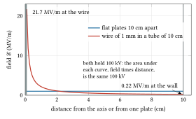
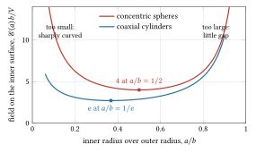
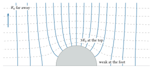
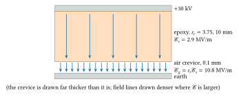
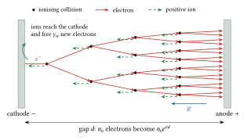
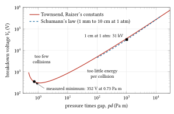
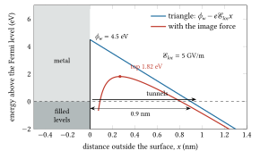

04 High voltage and breakdown
1745 to today: the Leyden jar, the spark gap, Tesla coils in oil, pressure tanks of compressed gas, vacuum tubes and their insulators; the wall is the spark, which comes when the field, not the voltage, grows too large.
Pre-requisites for this chapter.
- Gauss’s law and potentials of simple shapes (continued): the voltage as the integral of the field, and the fields between concentric spheres and coaxial cylinders, for a terminal in its tank (section 1).
- Laplace and Poisson equations, uniqueness, boundary-value problems (continued): conductors as equipotentials, uniqueness, the sphere in a uniform field and the needle, for where fields concentrate (section 1).
- Dielectrics, capacitance and field energy (continued): permittivity, boundary conditions, capacitance, stored energy and force, for the triple junction, the voltmeters and stored energy (sections 1, 8 and 9).
- Mean free path and collision rates (continued): the distribution of free paths and the scaling with \(\mathcal{E}/N\) and \(pd\), for Townsend’s coefficient and Paschen’s law (section 2).
- Tunnelling and the WKB approximation (continued): the triangular barrier at a metal surface, for field emission (section 5).
- Electrons in metals, Fermi-Dirac statistics, work function (continued): the sum over the Fermi sea and the image force, for the Fowler-Nordheim law (section 5).
- Images and two-dimensional complex potentials: image charges, for the peak field in a sphere gap (section 8).
- RLC circuits and phasors: dividers, discharge and damping, for measuring a high voltage and earthing (sections 8 and 9).
From Part 0, Foundations, the chapter relies on:
- F1 Calculus: the exponential and the logarithm (avalanches, Paschen’s law, tunnelling), maxima and minima (the best terminal radius, Paschen’s minimum), integrals and integration by parts, Taylor series, partial derivatives and first differential equations (growth of an avalanche, discharge of a capacitor).
- F2 Vectors: the gradient, line integrals, flux, divergence and Gauss’s theorem, the Laplacian and spherical and cylindrical coordinates.
- F3 Mechanics: the damped oscillator, for a sphere gap ringing with its leads (section 8).
- F4 Electromagnetism: the field, Gauss’s law, potential and the electron-volt, capacitance and field energy, dielectrics, Ohm’s law and RC circuits.
- F5 Waves: complex numbers and RLC circuits with phasors, for dividers and damping (section 8).
- F6 Heat and probability: probability density, the ideal gas, the Boltzmann factor and the mean free path, for the avalanche (section 2) and the Schottky effect.
- F7 Atoms and quanta: the electron-volt, X-rays, energy levels (ionisation and excitation) and the picture of quantum mechanics (tunnelling, the Pauli principle).
A note on symbols in this chapter. \(\mathcal{E}\) is the electric field in V/m, as in F4 and chapter 2, and \(\boldsymbol{\mathcal{E}}\) the field as a vector, \(p\) a gas pressure (no momentum appears), \(d\) a gap, \(V\) a voltage, \(Q\) a charge and \(C\) a capacitance. The work function \(\phi_w\) is an energy here, quoted in eV as in the Fowler-Nordheim literature; chapter 2 writes the same quantity as \(e\phi_w\), with \(\phi_w\) in volts. Other symbols that clash with the shared notation carry subscripts, noted where they first appear.
In one page
The wall. A static accelerator gives a particle \(qV\). By the late 1920s physicists wanted a million volts. Tesla coils and impulse generators could make it; nothing could hold it. Air sparked across, insulators flashed over along their surfaces, and vacuum tubes broke down from electrons pulled out of their own electrodes.
The idea. Breakdown is set by the electric field \(\mathcal{E}\), in volts per metre, at the worst point of a surface, not by the voltage. A voltage is held by spreading it over enough distance, enough smoothly curved metal, or enough separate parts, that the field stays below what the medium bears. An isolated sphere of radius \(R_s\) at potential \(V\) has surface field \(V/R_s\); a sharp point or edge multiplies the field by tens or hundreds.
The equations to remember.
\[ \begin{aligned} \mathcal{E} &= V/d \ \text{(plates)}, \qquad \mathcal{E} = V/R_s \ \text{(isolated sphere)}, \\ \mathcal{E}(a) &= \frac{V}{a\ln(b/a)} \ \text{(coaxial; least at } a = b/\mathrm{e}\text{)} \\ \gamma_{se}\left(e^{\alpha d}-1\right) &= 1 \quad \text{(Townsend's criterion for a self-sustained discharge)} \\ V_b &= \frac{B_T\,pd}{\ln\left[A_T\,pd/\ln(1+1/\gamma_{se})\right]} \quad \text{(Paschen's law: a function of } pd \text{ alone)} \\ J &= \frac{a_{FN}\mathcal{E}_{loc}^2}{\phi_w}\exp\left(-\frac{b_{FN}\phi_w^{3/2}}{\mathcal{E}_{loc}}\right), \qquad \mathcal{E}_{loc} = \beta_f \mathcal{E} \\ & \quad \text{(Fowler-Nordheim field emission)} \end{aligned} \]
Numbers worth knowing by heart. Air at one atmosphere and 20 °C breaks down at about 3 MV/m across a centimetre (31 kV across 1 cm), tending to 2.4 MV/m for long uniform gaps. Paschen’s minimum for air is about 330 to 350 V at a pressure times gap near 0.75 Pa m: no gap in air sparks below it. Sulphur hexafluoride is about 2.5 to 3 times stronger than air. Large electrodes in compressed gas run at fields of order 10 MV/m. Insulator surfaces in vacuum hold one to a few MV/m along their length. Field emission needs a local field of a few GV/m, which real surfaces reach at tens of MV/m because whiskers and dust multiply the field by \(\beta_f \approx 30\) to 200. Large vacuum gaps hold a voltage rising only as about the square root of the gap. Two 25 cm spheres 50 mm apart spark at 137 kV.
The wall
In October 1745 Ewald Georg von Kleist in Pomerania charged a small medicine bottle of alcohol or water through a nail in its cork and took a shock from it; early in 1746 Pieter van Musschenbroek in Leiden reported the same, and the Leyden jar, the first capacitor, took his town’s name. For a century and a half after, high voltage meant electrostatic machines, induction coils and their sparks, and the spark was measured long before it was understood. In 1889 Friedrich Paschen, then an assistant at Münster, measured the sparking voltage in air, hydrogen and carbon dioxide at many pressures and gaps, and found that it depends only on their product. From 1900 John Townsend, newly Wykeham Professor of Physics at Oxford, explained the current in a gas by an electron avalanche; his book Electricity in Gases (1915) gave the whole picture.
In the 1920s nuclear physics wanted particles of several MeV. Making several megavolts for a moment was possible. Holding them across something a beam could travel through was not. At the Carnegie Institution in Washington, Gregory Breit, Merle Tuve and Odd Dahl ran Tesla coils immersed in oil. In January 1930 (Carnegie’s own history dates the 5 MV to 1928) they reported about 3 MV in ordinary transformer oil and up to 5.2 MV in oil at 500 pounds per square inch (3.4 MPa), peak values measured with a capacity-potentiometer and a sphere gap. In the companion paper, Tuve, Breit and Lawrence Hafstad described tubes built, following William Coolidge at General Electric, as several sections in cascade. One withstood 1.4 MV repeatedly. The limit was uncontrolled cold-cathode emission: electrons drawn out of metal by the field itself. The coil made five megavolts; the tube held a little over one, and only as a pulse.
Coolidge had run a three-section cascade tube at about 900 kV by 1928. In 1927 and 1928 Arno Brasch, Fritz Lange and Kurt Urban tried to harness lightning with a cable slung across a valley at Monte Generoso in southern Switzerland, then turned to an impulse generator and tubes of their own, reported in 1931. Every group met the same three failures: sparks through the air outside, flashover along insulating surfaces, and breakdown inside the vacuum.
The answers of 1931 and 1932 were both about field. Cockcroft and Walton divided the voltage among many rectifiers and capacitors and their tube into sections (chapter 5); Van de Graaff carried charge into a large smooth sphere whose size sets its surface field (chapter 6). Tuve’s group took up Van de Graaff’s generator in 1931; their first, with a sphere 1 m across, gave ions of 600 kV by 1933, and a generator with a 2 m outer shell held up to 1.3 MV in 1935 (Livingston and Blewett, section 3-1).
The physics
Pre-requisite (continued): Gauss’s law and potentials of simple shapes
Pre-requisite. This section adds Gauss’s law as a working tool, the voltage as the line integral of the field, and the fields between concentric spheres and between coaxial cylinders. Section 1 uses them to size a terminal inside its tank and to show why a voltage alone says nothing about breakdown. Taught from Tong, Electromagnetism, sections 2.1 (Gauss’s law, 2.1.2 the uniform sphere, 2.1.3 the line charge) and 2.2.1, and Kuffel, Zaengl and Kuffel, section 4.2.2.
Reminder: chapter 1 gave Coulomb’s law, the potential \(V\) with \(\boldsymbol{\mathcal{E}} = -\nabla V\), and the fact that a uniformly charged sphere acts outside as a point charge at its centre. Part 0 taught the same tools from the start: the field in F4, section 3, the potential in F4, section 5, the gradient in F2, section 6 and the line integral in F2, section 7. Here those ideas are put to work on electrodes.
The voltage is the integral of the field. Move a short step \(d\mathbf{l}\) (metres). The potential changes by \(dV = \nabla V\cdot d\mathbf{l}\) (this is what the gradient means: its component along a step is the rate of change of \(V\) along that step, F2, section 6), and since \(\boldsymbol{\mathcal{E}} = -\nabla V\) this is \(dV = -\boldsymbol{\mathcal{E}}\cdot d\mathbf{l}\). Add up the steps along any path from a point A to a point B:
\[ V_A - V_B = \int_A^B \boldsymbol{\mathcal{E}}\cdot d\mathbf{l}. \]
In a static field the answer is the same for every path (a static field is conservative, F2, section 7). So a voltage fixes only the total area under the field along a path; how that area is shared out depends on the shape of the electrodes. Take 100 kV. Between flat plates 10 cm apart it gives 1 MV/m everywhere. Between a wire of radius 1 mm and a tube of radius 10 cm (worked out below) it gives 21.7 MV/m at the wire and 0.22 MV/m at the tube wall. Same voltage, a field a hundred times larger at one place. Breakdown starts where the field is largest, which is why the chapter speaks of field and not voltage.

Figure 4.1. The same 100 kV across 10 cm, held two ways. Between flat plates the field is 1 MV/m everywhere; between a wire of 1 mm radius and a tube of 10 cm radius it is \(\mathcal{E}(r) = V/[r\ln(b/a)]\), 21.7 MV/m at the wire and 0.22 MV/m at the wall. The area under each curve is the voltage, the same for both; the peak field, which decides breakdown, differs twentyfold.
Gauss’s law. The flux of \(\boldsymbol{\mathcal{E}}\) out of any closed surface equals the charge inside divided by \(\varepsilon_0\):
\[ \oint \boldsymbol{\mathcal{E}}\cdot d\mathbf{S} = \frac{Q_{enc}}{\varepsilon_0}, \]
with \(d\mathbf{S}\) an element of area (m\(^2\)) pointing outwards, \(Q_{enc}\) in coulombs and \(\varepsilon_0 = 8.854\times10^{-12}\) F/m. (F4, section 4 teaches it, and F2, section 9 defines flux, the amount of field passing through a surface.) The idea behind it: field lines begin and end only on charges. For a point charge the field falls as \(1/r^2\) while the area of a sphere grows as \(r^2\), so the flux through any sphere around it is the same, \(Q/\varepsilon_0\), and bending the surface does not change the count of lines through it. The law always holds, but it gives the field only when symmetry tells us the field’s direction and that its size is the same everywhere on a well-chosen surface. Spheres and long cylinders are exactly such cases, and they are the shapes of terminals and tanks.
Concentric spheres. An inner sphere of radius \(a\) carries charge \(Q\); an earthed outer shell of radius \(b\) surrounds it, and its inner surface carries \(-Q\). Take a Gaussian sphere of radius \(r\) between them. By symmetry \(\boldsymbol{\mathcal{E}}\) points radially and has the same size all over it, so the flux is \(\mathcal{E}\cdot4\pi r^2\), and only the inner charge is enclosed:
\[ \mathcal{E}(r) = \frac{Q}{4\pi\varepsilon_0r^2}, \qquad a < r < b. \]
The outer shell’s charge adds nothing inside it, because a Gaussian sphere inside the shell does not enclose it. Integrate from \(a\) to \(b\) to get the voltage, using \(\int dr/r^2 = -1/r\):
\[ V = \int_a^b \frac{Q}{4\pi\varepsilon_0r^2}\,dr = \frac{Q}{4\pi\varepsilon_0}\left(\frac1a - \frac1b\right) = \frac{Q\,(b-a)}{4\pi\varepsilon_0\,ab}. \]
Use this to replace the charge, which nobody measures, by the voltage, which is what we set:
\[ \mathcal{E}(r) = \frac{V\,ab}{(b-a)\,r^2}, \qquad \mathcal{E}(a) = \frac{V\,b}{a\,(b-a)}. \]
As \(b\to\infty\) the surface field becomes \(V/a\), the isolated sphere of section 1. How far away must the earthed wall be before a sphere counts as isolated? For \(a = 0.3\) m at 1 MV the surface field is 6.67 MV/m with the wall at \(b = 0.6\) m, 4.76 at 1 m, 3.92 at 2 m, 3.55 at 5 m, and 3.33 MV/m with no wall at all. A nearby wall raises the field, because the same voltage must now fall across a shorter path.
For a fixed tank radius \(b\), the field on the terminal is least when \(a(b-a)\) is largest: \(d[a(b-a)]/da = b - 2a = 0\), so \(a = b/2\) and \(\mathcal{E}_{min} = 4V/b\).
Coaxial cylinders. Now an inner cylinder of radius \(a\) carries charge \(\lambda\) per metre (C/m) inside an earthed tube of radius \(b\), both long enough that the ends do not matter. Take a Gaussian cylinder of radius \(r\) and length \(\ell\). The field is radial, so no flux leaves through the flat ends; through the curved side the flux is \(\mathcal{E}\cdot2\pi r\ell\), and the charge inside is \(\lambda\ell\):
\[ \mathcal{E}(r) = \frac{\lambda}{2\pi\varepsilon_0r}, \qquad V = \int_a^b\frac{\lambda}{2\pi\varepsilon_0r}\,dr = \frac{\lambda}{2\pi\varepsilon_0}\ln\frac ba, \]
since \(\int dr/r = \ln r\) and \(\ln b - \ln a = \ln(b/a)\) (F1, section 4). Eliminating \(\lambda\),
\[ \mathcal{E}(r) = \frac{V}{r\ln(b/a)}, \qquad \mathcal{E}(a) = \frac{V}{a\ln(b/a)}. \]
The field falls only as \(1/r\), more slowly than the \(1/r^2\) of spheres, so a cylinder spreads its voltage more evenly across the gap. For fixed \(b\), minimise \(\mathcal{E}(a)\) by making \(a\ln(b/a) = a(\ln b - \ln a)\) largest: by the product rule its derivative is \((\ln b - \ln a) + a\times(-1/a) = \ln(b/a) - 1\), zero at \(a = b/\mathrm{e}\), where the field is \(\mathcal{E}_{min} = \mathrm{e}V/b\). Comparing the two best cases at the same \(b\) and \(V\), a sphere’s least field is \(4/\mathrm{e} = 1.47\) times a cylinder’s.

Figure 4.2. The field on an inner electrode of radius \(a\) inside an earthed one of radius \(b\), in units of \(V/b\): \(b/[a(b-a)]\) for concentric spheres, least (4) at \(a = b/2\), and \(1/[a\ln(b/a)]\) for coaxial cylinders, least (\(\mathrm{e}\)) at \(a = b/\mathrm{e}\). A small terminal is too sharply curved, a large one leaves too little gap; the minimum between them is shallow.
At work: Herb’s tank. The tank of section 1 has \(b = 0.838\) m and held 2.16 MV. As coaxial cylinders, the best terminal radius is \(0.838/2.718 = 0.308\) m and the field on it 7.0 MV/m. Were the terminal a sphere in a spherical tank of the same radius, the best radius would be 0.419 m and the least field \(4\times2.16/0.838 = 10.3\) MV/m. As a check on the line integral, integrating \(Q/(4\pi\varepsilon_0r^2)\) numerically from 0.419 m to 0.838 m, with \(Q\) chosen from the formula above, returns 2.16 MV.
At work: a corona wire. The wire of section 4, radius 1 mm in a tube of radius 10 cm at 28.5 kV, has \(\mathcal{E}(a) = 28\,500/(0.001\ln100) = 6.19\) MV/m. The mean field across the gap is \(28.5\ \mathrm{kV}/0.099\ \mathrm{m} = 0.29\) MV/m; the wire sees 21 times the mean.
Exercise A1. Van de Graaff’s Round Hill sphere had radius 2.29 m. (a) What charge did it carry at 2.4 MV, treated as isolated? (b) How far away must an earthed concentric wall be for the surface field to be no more than 10 per cent above the isolated value?
Answer
\(Q = 4\pi\varepsilon_0R_sV = 1.113\times10^{-10}\times2.29\times2.4\times10^6 = 6.1\times10^{-4}\) C, with surface field \(2.4/2.29 = 1.05\) MV/m.
The concentric-sphere field is the isolated one times \(b/(b-a)\). Setting \(b/(b-a) = 1.1\) gives \(b = 11a = 25\) m. A hall large enough for a sphere is also large enough to raise its field noticeably.
Exercise A2. For coaxial cylinders at the best ratio \(a = b/\mathrm{e}\), what fraction of the voltage lies across the tenth of the gap nearest the inner conductor? Compare spheres at \(a = b/2\).
Answer
For cylinders the potential drop from \(a\) to \(r\) is \(V\ln(r/a)/\ln(b/a)\). With \(b = 1\), \(a = 0.368\) and \(r = a + 0.1(b - a) = 0.431\): \(\ln(0.431/0.368)/1 = 0.159\), so 16 per cent. For spheres the drop is \(V(1/a - 1/r)/(1/a - 1/b)\); with \(a = 0.5\) and \(r = 0.55\) this is 0.18. Either way the tenth of the gap next to the terminal carries more than its tenth of the voltage, which is why the terminal’s surface is where breakdown starts.
Pre-requisite (continued): Laplace and Poisson equations, uniqueness, boundary-value problems
Pre-requisite. This section gives Laplace’s equation in three dimensions, conductors as equipotentials, the uniqueness theorem, the conducting sphere in a uniform field, potentials that depend on one coordinate only, and why sharp points carry strong fields. Section 1 uses them for the hemispherical bump that triples a field, the needle of exercise 4, and the rule that every high-voltage conductor is round. Taught from Tong, Electromagnetism, sections 2.2 and 2.4 (conductors, charge and curvature, 2.4.2 boundary-value problems, 2.4.3 problem 3), and Kuffel, Zaengl and Kuffel, sections 4.2.5 (field distortions by conducting particles, in prolate spheroidal coordinates) and 4.1.
Reminder: chapter 2 solved Poisson’s equation \(d^2V/dx^2 = -\rho/\varepsilon_0\) across a diode in one dimension, and noted that an empty gap gives a straight-line potential. Real electrodes need three dimensions, and with them the divergence of F2, section 10 and the Laplacian of F2, section 12.
Laplace’s equation in three dimensions. Apply Gauss’s law to a tiny box of sides \(dx\), \(dy\), \(dz\). The flux out through the two faces normal to \(x\) is \([\mathcal{E}_x(x+dx) - \mathcal{E}_x(x)]\,dy\,dz = (\partial \mathcal{E}_x/\partial x)\,dx\,dy\,dz\), and likewise for \(y\) and \(z\). Setting the total equal to \(\rho\,dx\,dy\,dz/\varepsilon_0\), with \(\rho\) the charge density in C/m\(^3\),
\[ \nabla\cdot\boldsymbol{\mathcal{E}} = \frac{\partial \mathcal{E}_x}{\partial x} + \frac{\partial \mathcal{E}_y}{\partial y} + \frac{\partial \mathcal{E}_z}{\partial z} = \frac{\rho}{\varepsilon_0}. \]
Put in \(\boldsymbol{\mathcal{E}} = -\nabla V\) and this becomes Poisson’s equation, \(\nabla^2V = -\rho/\varepsilon_0\); in space empty of charge, which is nearly all the space between electrodes, it is Laplace’s equation,
\[ \nabla^2V = \frac{\partial^2V}{\partial x^2} + \frac{\partial^2V}{\partial y^2} + \frac{\partial^2V}{\partial z^2} = 0. \]
What it says: average \(V\) over a small sphere of radius \(h\) around a point. Let \(\hat{\mathbf{n}} = (n_x, n_y, n_z)\) be a unit vector pointing from the centre to a point on the sphere. A Taylor series in three variables (F1, sections 8 and 9) gives
\[ V(\text{centre} + h\hat{\mathbf{n}}) = V_0 + h\left(n_x\frac{\partial V}{\partial x} + n_y\frac{\partial V}{\partial y} + n_z\frac{\partial V}{\partial z}\right) + \frac{h^2}{2}\sum_{i,j}n_in_j\frac{\partial^2V}{\partial x_i\,\partial x_j} + \ldots \]
Average over all directions. Every \(\hat{\mathbf{n}}\) is paired with \(-\hat{\mathbf{n}}\), so the averages of \(n_x\), \(n_y\), \(n_z\) and of the mixed products such as \(n_xn_y\) are zero. The squares are not: \(n_x^2 + n_y^2 + n_z^2 = 1\) everywhere, and no axis is special, so each square averages to 1/3. Only the terms \(\frac{h^2}{2}\cdot\frac13(\partial^2V/\partial x^2 + \partial^2V/\partial y^2 + \partial^2V/\partial z^2)\) survive, and the average is \(V_0 + h^2\nabla^2V/6\). Laplace’s equation says the potential at every point equals its local average. So \(V\) has no peak or hollow in empty space; its extremes, and the steepest slopes with them, sit on the electrodes.
Conductors. In a metal, charges move freely. In equilibrium the field inside must be zero, or current would flow; so \(V\) is the same throughout the metal and over its surface. Just outside, the field is normal to the surface, because a component along the surface would push the surface charges along. A conductor is therefore a boundary on which \(V\) is given, and the field leaves it at right angles.
Uniqueness. In a region bounded by surfaces on which \(V\) is given, Laplace’s equation has only one solution. Suppose \(V_1\) and \(V_2\) both solve it with the same boundary values. Their difference \(U = V_1 - V_2\) satisfies \(\nabla^2U = 0\) inside and \(U = 0\) on every boundary. The product rule, used on each component, gives \(\partial_x(U\,\partial_xU) = (\partial_xU)^2 + U\,\partial_x^2U\), and adding the three components, \(\nabla\cdot(U\nabla U) = |\nabla U|^2 + U\nabla^2U = |\nabla U|^2\). Integrate over the region (\(d\tau\) is an element of volume, m\(^3\)) and use the divergence theorem of F2, section 10:
\[ \int |\nabla U|^2\,d\tau = \oint U\,\nabla U\cdot d\mathbf{S} = 0, \]
since \(U = 0\) on the boundary. A sum of squares that is zero means \(\nabla U = 0\) everywhere, so \(U\) is constant, and zero because it is zero on the boundary. Two consequences matter here:
- Any potential, however it was found or guessed, that satisfies Laplace’s equation and the boundary values is the answer. This licenses the guesses below and the image charges of section 8.
- Any equipotential surface of a known solution can be replaced by a thin metal sheet held at that potential, and the field on either side does not change: both sides still satisfy Laplace’s equation with the same boundary values.
A conducting sphere in a uniform field. Put an earthed sphere of radius \(R\) (m) at the origin of a uniform field \(\mathcal{E}_0\) along \(z\), whose potential is \(-\mathcal{E}_0z = -\mathcal{E}_0r\cos\theta\) in spherical coordinates (\(r\) from the centre, \(\theta\) from the \(z\) axis). Far away, the field must return to this. Try \(V = f(r)\cos\theta\). For a potential that does not depend on the azimuth, the Laplacian in spherical coordinates is
\[ \nabla^2V = \frac{1}{r^2}\frac{\partial}{\partial r}\left(r^2\frac{\partial V}{\partial r}\right) + \frac{1}{r^2\sin\theta}\frac{\partial}{\partial\theta}\left(\sin\theta\frac{\partial V}{\partial\theta}\right) \]
(derived below from the scale factors). For \(V = f(r)\cos\theta\) the radial part is \((1/r^2)(r^2f')'\cos\theta\). In the angular part, \(\partial_\theta V = -f\sin\theta\), so \(\sin\theta\,\partial_\theta V = -f\sin^2\theta\), whose \(\theta\)-derivative is \(-2f\sin\theta\cos\theta\); dividing by \(r^2\sin\theta\) leaves \(-2f\cos\theta/r^2\). The two parts sum to zero when \((r^2f')' = 2f\). Try \(f = r^n\): \(r^2f' = nr^{n+1}\), whose derivative is \(n(n+1)r^n\), so \(n(n+1) = 2\), giving \(n = 1\) or \(n = -2\). The combination that goes to \(-\mathcal{E}_0r\) far away and to zero on the sphere is
\[ V = -\mathcal{E}_0\left(r - \frac{R^3}{r^2}\right)\cos\theta. \]
The second term is the field of a dipole: the charges the field draws onto the sphere. By uniqueness this is the answer. The field on the surface is
\[ \mathcal{E}_r = -\frac{\partial V}{\partial r}\bigg|_{r=R} = \mathcal{E}_0\left(1 + \frac{2R^3}{r^3}\right)\cos\theta\bigg|_{r=R} = 3\mathcal{E}_0\cos\theta, \]
three times the applied field at the poles. A numerical check (the Laplacian by finite differences at an arbitrary point, and the field at the pole) confirms both: the Laplacian is zero to \(3\times10^{-7}\) and the pole field is \(3.000\mathcal{E}_0\). The factor 3 does not depend on \(R\): Laplace’s equation contains no length, so a sphere of a micrometre and a sphere of a metre give the same ratio.
The plane \(z = 0\) is the equipotential \(V = 0\) of this solution. By the second consequence of uniqueness, replace it with a flat earthed electrode: the half of the solution above the plane is the field over a hemispherical bump on a flat electrode. Any such bump, whatever its size, triples the field at its top. Away from the bump the excess dies fast: along the axis the field is \(\mathcal{E}_0(1 + 2R^3/r^3)\), so \(1.59\mathcal{E}_0\) at \(r = 1.5R\), \(1.25\mathcal{E}_0\) at \(2R\) and \(1.07\mathcal{E}_0\) at \(3R\).

Figure 4.3. A hemispherical boss on a flat electrode, from \(V = -\mathcal{E}_0(r - R^3/r^2)\cos\theta\). Solid lines are field lines, dashed lines equipotentials. The field lines crowd onto the top, where the field is \(3\mathcal{E}_0\), and spread apart at the foot, where it falls towards zero; a few radii away the field is uniform again.
At work. Herb’s terminal ran at 7.0 MV/m (section 1). A hemispherical burr anywhere on it would see 21 MV/m, above the 17 MV/m that air at 0.69 MPa bears. A small burr’s excess field is confined to a layer a few burr radii thick, which may be too thin for an avalanche to grow across the gap; it then gives corona, or in vacuum field emission (section 5), rather than a full spark. Either way, it loads the terminal or starts the trouble.
Potentials that depend on one coordinate. Planes, spheres and cylinders give potentials depending on one coordinate, and so does the needle. The general method: in orthogonal coordinates \((q_1, q_2, q_3)\), let \(h_i\) be the scale factors, the length moved per unit change of \(q_i\). A small box has sides \(h_1dq_1\), \(h_2dq_2\), \(h_3dq_3\). The flux of \(\nabla V\) through its faces normal to \(q_1\) is the face area \(h_2h_3\,dq_2\,dq_3\) times the normal derivative \((1/h_1)\partial V/\partial q_1\); the net outflow from the pair of faces is \(\partial_{q_1}[(h_2h_3/h_1)\partial_{q_1}V]\,dq_1dq_2dq_3\). Summing the three pairs and dividing by the volume \(h_1h_2h_3\,dq_1dq_2dq_3\),
\[ \nabla^2V = \frac{1}{h_1h_2h_3}\sum_{i=1}^{3}\frac{\partial}{\partial q_i}\left(\frac{h_1h_2h_3}{h_i^2}\frac{\partial V}{\partial q_i}\right). \]
If \(V\) depends on \(q_1\) alone, Laplace’s equation reduces to \(\partial_{q_1}[(h_2h_3/h_1)\,dV/dq_1] = 0\), which can be integrated twice when the factor \(h_2h_3/h_1\) splits into a function of \(q_1\) times a function of the other coordinates.
- Spherical coordinates \((r, \theta, \varphi)\) have \(h = (1, r, r\sin\theta)\); for \(V(r)\): \((r^2V')' = 0\), so \(V = -A/r + B\), the concentric spheres.
- Cylindrical coordinates \((r, \varphi, z)\) have \(h = (1, r, 1)\); for \(V(r)\): \((rV')' = 0\), so \(V = A\ln r + B\), the coaxial cylinders.
- Prolate spheroidal coordinates use the hyperbolic functions \(\sinh u = (e^u - e^{-u})/2\) and \(\cosh u = (e^u + e^{-u})/2\), which obey \(\cosh^2u - \sinh^2u = 1\) much as cosine and sine obey \(\cos^2 + \sin^2 = 1\); \(\sinh 0 = 0\) and \(\cosh 0 = 1\). The coordinates \((u, \theta, \varphi)\), with foci a distance \(a\) from the origin on the \(z\) axis, are defined by \(x = a\sinh u\sin\theta\cos\varphi\), \(y = a\sinh u\sin\theta\sin\varphi\), \(z = a\cosh u\cos\theta\), with \(u \ge 0\) and \(0 \le \theta \le \pi\); the surfaces of constant \(u\) are prolate spheroids. They have \(h_u = h_\theta = a\sqrt{\sinh^2u + \sin^2\theta}\) and \(h_\varphi = a\sinh u\sin\theta\) (found as in F2, section 13: change one coordinate a little, holding the others, and measure the length of the step that results). For \(V(\theta)\) the factor \(h_uh_\varphi/h_\theta = a\sinh u\sin\theta\) splits, and Laplace’s equation becomes \(\frac{d}{d\theta}\left(\sin\theta\frac{dV}{d\theta}\right) = 0\). The surfaces of constant \(\theta\) are hyperboloids of revolution, and \(\theta = \pi/2\) is a plane: a needle facing a plate.
Integrating the last once gives \(\sin\theta\,dV/d\theta = -A\), a constant, so \(dV/d\theta = -A/\sin\theta\). The integral of \(1/\sin\theta\) is \(\ln\tan(\theta/2)\), as differentiating checks: \(\frac{d}{d\theta}\ln\tan(\theta/2) = \frac{\frac12\sec^2(\theta/2)}{\tan(\theta/2)} = \frac{1}{2\sin(\theta/2)\cos(\theta/2)} = \frac{1}{\sin\theta}\). So \(V = -A\ln\tan(\theta/2) + B = A\ln\cot(\theta/2) + B\), and \(B = 0\) makes it zero on the plane, where \(\cot(\pi/4) = 1\). This \(V = A\ln\cot(\theta/2)\) is zero on the plane (a finite-difference Laplacian of it at an arbitrary point is zero to \(5\times10^{-7}\)). Exercise 4 of the chapter takes it to \(\mathcal{E}_{tip} \approx 2V/[r\ln(4d/r)]\) for a tip of radius \(r\) at distance \(d\). At 10 kV with \(r = 0.1\) mm and \(d = 10\) cm this is 24.1 MV/m; the exact hyperboloid gives 24.12 MV/m. With a 1 mm tip it is 3.3 MV/m: the field goes almost as \(1/r\), while the distance enters only through a logarithm.
Charge and curvature. Why are sharp places strong? Take two spheres of radii \(R_1\) and \(R_2\), far apart and joined by a thin wire, so they share one potential \(V\). Each is nearly isolated, so \(V = Q_1/(4\pi\varepsilon_0R_1) = Q_2/(4\pi\varepsilon_0R_2)\), and the charges are in proportion to the radii. The surface charge per area, \(Q/4\pi R^2\), and with it the surface field \(V/R\), go as \(1/R\): \(\mathcal{E}_1/\mathcal{E}_2 = R_2/R_1\). A single conductor with parts of different curvature behaves roughly the same way: its sharply curved parts carry more charge per area and more field. A terminal of radius 0.25 m at 300 kV has 1.2 MV/m on its surface; a wire end of radius 1 mm at the same potential would, by this estimate, carry up to 300 MV/m. The estimate overstates it, because the wire end sits close to the large sphere. Treating the wire end instead as a needle 25 cm from an earthed wall, the needle formula gives \(2\times300\ \mathrm{kV}/(1\ \mathrm{mm}\times\ln1000) = 87\) MV/m: lower, and still far above the 3 MV/m air bears. Hence the hemispheres, toroids and corona rings of the high-voltage laboratory.
Exercise B1. On a conducting sphere in a uniform field \(\mathcal{E}_0\), at what angle from the pole is the surface field equal to \(\mathcal{E}_0\)? What does this say about a hemispherical boss?
Answer
\(3\mathcal{E}_0\cos\theta = \mathcal{E}_0\) gives \(\cos\theta = 1/3\), \(\theta = 70.5°\). Over the top 70° of a boss the field exceeds the applied field; near its foot the field falls to zero, because the gas there sits in a right-angled corner between the bump and the flat electrode, and a field cannot reach into such a corner.
Exercise B2. A needle of tip radius 0.1 mm stands 10 cm from a plate at 10 kV (24.1 MV/m at the tip). Find the tip field if the radius is halved, and separately if the distance is doubled.
Answer
\(\mathcal{E}_{tip} = 2V/[r\ln(4d/r)]\). Halving \(r\) to 0.05 mm: \(2\times10^4/(5\times10^{-5}\ln8000) = 44.5\) MV/m, nearly double. Doubling \(d\) to 20 cm: \(2\times10^4/(10^{-4}\ln8000) = 22.3\) MV/m, only 8 per cent lower. The tip’s radius controls the field; the gap barely does.
Exercise B3. Show that \(V = A\ln r + B\) is the only potential depending on \(r\) alone between coaxial cylinders, and fix \(A\) and \(B\) for the inner cylinder at \(V\) and the outer at zero.
Answer
\((rV')' = 0\) gives \(rV' = A\), so \(V' = A/r\) and \(V = A\ln r + B\). With \(V(b) = 0\), \(B = -A\ln b\), so \(V(r) = A\ln(r/b)\); with \(V(a) = V\), \(A = V/\ln(a/b) = -V/\ln(b/a)\). Then \(\mathcal{E} = -dV/dr = V/[r\ln(b/a)]\), the result Gauss’s law gave in the previous section. By uniqueness the two methods must agree.
Pre-requisite (continued): Dielectrics, capacitance and field energy
Pre-requisite. This section gives the relative permittivity and the displacement \(\mathbf{D}\), the conditions on fields at a boundary between materials, the field in series layers, the charge on a conductor’s surface, capacitance, stored energy and the force on an electrode. Section 1 uses them for the triple junction; sections 5, 7, 8 and 9 use them for Cranberg’s clumps, voids in solids, the voltmeters and the stored energy. Taught from Tong, Electromagnetism, sections 2.1.4 (surface charge and discontinuities), 2.3 (electrostatic energy), 2.4.1 (capacitors) and 8.1 (polarisation, electric displacement), Landau and Lifshitz, volume 2, section 31 (energy density), and Kuffel, Zaengl and Kuffel, section 4.3 (fields in several dielectrics).
Reminder: chapter 1 used \(\Delta V = Q/C\) for the voltage a collected charge makes on a capacitance. Here is where capacitance comes from, and what an insulator does to a field. F4, section 6 and section 7 gave the first look; this section goes further.
Polarisation and relative permittivity. An insulator has no free charges, but its atoms and molecules are stretched by a field: electrons shift against the nuclei, and polar molecules turn. Each becomes a small dipole along the field: a pair of equal and opposite charges \(\pm q\) a small distance \(\ell\) apart, with dipole moment \(q\ell\) (C m; F4, section 3). The dipole moment per unit volume is the polarisation \(\mathbf{P}\) (C/m\(^2\)). Inside a uniform piece the shifted charges cancel, but at its surfaces a layer is left uncovered: a bound surface charge of density \(\mathbf{P}\cdot\hat{\mathbf{n}}\), which opposes the applied field and weakens it inside. In most insulators \(\mathbf{P}\) is proportional to \(\boldsymbol{\mathcal{E}}\), and it is convenient to define the displacement
\[ \mathbf{D} = \varepsilon_0\boldsymbol{\mathcal{E}} + \mathbf{P} = \varepsilon_0\varepsilon_r\boldsymbol{\mathcal{E}}, \]
with \(\varepsilon_r\) the relative permittivity, a pure number: 1.0005 for air, about 2.2 for transformer oil, 2.3 for polyethylene, 2.1 for PTFE, 3.5 to 4 for epoxy, about 9.8 for alumina. (\(\mathbf{D}\) is bold here; from section 5 on, \(D\) alone is a probability of transmission.) Gauss’s law, which counts all charge, can then be written for the free charge alone, because the bound charge has been folded into \(\mathbf{D}\):
\[ \oint \mathbf{D}\cdot d\mathbf{S} = Q_{free}. \]
Fill a pair of plates holding free charge \(\pm Q\) on area \(A_e\) with a dielectric: \(D = Q/A_e\) as before, so \(\mathcal{E} = Q/(\varepsilon_0\varepsilon_rA_e)\), smaller by \(\varepsilon_r\).
Conditions at a boundary. Where two materials meet, take a flat pillbox straddling the surface, thinner than anything else in the problem. Only its two faces carry flux, so if there is no free charge on the surface, the normal component of \(\mathbf{D}\) is the same on both sides:
\[ \varepsilon_{r1}\mathcal{E}_{n1} = \varepsilon_{r2}\mathcal{E}_{n2}. \]
Take instead a thin rectangular loop straddling the surface. A static field has zero integral round any closed loop (it is conservative, F2, section 7), and only the two long sides contribute, so the tangential component of \(\boldsymbol{\mathcal{E}}\) is the same on both sides. If the surface carries free charge \(\sigma_q\) per area (C/m\(^2\); \(\sigma_q\) to keep it apart from the cross-section \(\sigma_c\) of section 2), the pillbox gives \(D_{n2} - D_{n1} = \sigma_q\).
Surface charge on a conductor. At a metal surface the field inside is zero, so the pillbox gives the field just outside, in gas or vacuum:
\[ \mathcal{E} = \frac{\sigma_q}{\varepsilon_0}, \qquad \sigma_q = \varepsilon_0\mathcal{E}. \]
A patch of area \(A_e\) on an electrode where the field is \(\mathcal{E}\) carries charge \(\varepsilon_0\mathcal{E}A_e\). At 3 MV/m that is \(2.66\times10^{-5}\) C/m\(^2\), \(1.7\times10^{14}\) electrons per square metre. This is the charge Cranberg’s clump carries away (section 5), and the charge the generating voltmeter detects (section 8).
Layers in series: why a crevice is dangerous. A solid of thickness \(d\) and permittivity \(\varepsilon_r\) sits between flat electrodes, with a thin layer of gas of thickness \(t\) between it and one electrode. Both fields are normal to the layers, so continuity of \(D_n\) gives \(\varepsilon_0\mathcal{E}_g = \varepsilon_0\varepsilon_r\mathcal{E}_s\), that is \(\mathcal{E}_g = \varepsilon_r\mathcal{E}_s\): the gas carries \(\varepsilon_r\) times the field in the solid. The voltages add: \(V = \mathcal{E}_sd + \mathcal{E}_gt = \mathcal{E}_s(d + \varepsilon_rt)\). So
\[ \mathcal{E}_s = \frac{V}{d + \varepsilon_rt}, \qquad \mathcal{E}_g = \frac{\varepsilon_rV}{d + \varepsilon_rt} \approx \frac{\varepsilon_rV}{d} \quad (t \ll d/\varepsilon_r). \]
The weaker medium gets the stronger field. At work: epoxy 10 mm thick, \(\varepsilon_r = 3.75\), at 30 kV, with an air crevice of 0.1 mm at the electrode. Without the crevice the field is 3.0 MV/m. With it, the epoxy carries 2.9 MV/m and the crevice 10.8 MV/m, 1.08 kV across 0.1 mm of air. Air at one atmosphere across 0.1 mm breaks down at about 0.9 kV (Paschen’s law, section 2), so the crevice sparks again and again while the solid holds: partial discharge, which erodes the epoxy over time. A void inside a solid behaves the same way. A crevice of 10 µm carries only 112 V, below air’s Paschen minimum of about 330 V, and cannot spark at all; hence electrodes are bonded or moulded into their insulators.

Figure 4.4. Epoxy 10 mm thick (\(\varepsilon_r = 3.75\)) at 30 kV, with an air crevice of 0.1 mm at the earthed electrode (drawn far thicker than it is). The normal component of \(\mathbf{D}\) is continuous, so the air carries \(\varepsilon_r\) times the field in the solid: 10.8 MV/m against 2.9 MV/m. The weaker medium gets the stronger field.
Capacitance. A pair of conductors with charges \(\pm Q\) and potential difference \(V\) has capacitance \(C = Q/V\), in farads (C/V). Each shape follows from its field:
- parallel plates, area \(A_e\), gap \(d\): \(C = \varepsilon_0\varepsilon_rA_e/d\);
- an isolated sphere of radius \(R_s\), from \(V = Q/(4\pi\varepsilon_0R_s)\): \(C = 4\pi\varepsilon_0R_s\), 111 pF per metre of radius;
- concentric spheres: \(C = 4\pi\varepsilon_0ab/(b-a)\);
- coaxial cylinders, per metre of length: \(C = 2\pi\varepsilon_0\varepsilon_r/\ln(b/a)\), which is 55.6 pF/m in gas at the best ratio \(b/a = \mathrm{e}\).
Stored energy. Charge a capacitor by carrying small charges \(dq\) from one conductor to the other. When it already holds \(q\), the voltage is \(q/C\) and the step costs \((q/C)\,dq\). Summing from zero to \(Q\),
\[ U_{st} = \int_0^Q\frac{q}{C}\,dq = \frac{Q^2}{2C} = \tfrac12CV^2 = \tfrac12QV. \]
The factor one half appears because the early charge was moved across a smaller voltage. Where is the energy? For plates, \(\tfrac12CV^2 = \tfrac12(\varepsilon_0A_e/d)(\mathcal{E}d)^2 = \tfrac12\varepsilon_0\mathcal{E}^2\times A_ed\): an energy density
\[ u = \tfrac12\varepsilon_0\mathcal{E}^2 \quad \text{(J/m}^3\text{)} \]
through the volume \(A_ed\) where the field is. The result holds for any shape (in a dielectric it is \(\tfrac12\mathbf{D}\cdot\boldsymbol{\mathcal{E}}\)). At 10 MV/m it is 443 J/m\(^3\).
At work. The Round Hill sphere, \(R_s = 2.29\) m, has \(C = 255\) pF and at 2.4 MV stored \(\tfrac12\times255\ \mathrm{pF}\times(2.4\ \mathrm{MV})^2 = 734\) J. Herb’s terminal, as a coaxial conductor at the best ratio, has 56 pF per metre and at 2.16 MV stores 130 J per metre. Letournel’s 400 kJ for the Vivitron at 35 MV corresponds to an effective capacitance of \(2U_{st}/V^2 = 650\) pF.
Force on an electrode. Hold the charge \(Q\) on parallel plates fixed and let the gap \(S\) grow by \(dS\). The energy \(U_{st} = Q^2/(2C) = Q^2S/(2\varepsilon_0A_e)\) grows by \(Q^2\,dS/(2\varepsilon_0A_e)\), and with no battery connected that energy must come from work done pulling the plates apart. So the plates attract with
\[ F = \frac{Q^2}{2\varepsilon_0A_e} = \tfrac12\varepsilon_0\mathcal{E}^2A_e = \frac{\varepsilon_0A_eV^2}{2S^2}. \]
Per unit area this is a pull of \(\tfrac12\varepsilon_0\mathcal{E}^2\) on any conductor surface, equal to the energy density. At 3 MV/m it is only 40 Pa, a 2,500th of atmospheric pressure: electrostatic forces on electrodes are weak. That is why the electrostatic voltmeter of section 8 needs a delicate balance: a disc 10 cm across at 10 cm feels 0.035 N at 100 kV.
Exercise C1. For the epoxy above (10 mm, \(\varepsilon_r = 3.75\), 30 kV), how thin must the air crevice be for its voltage to stay below 330 V?
Answer
The crevice voltage is \(\mathcal{E}_gt = \varepsilon_rVt/(d + \varepsilon_rt)\). Setting it equal to 330 V: \(3.75\times30\,000\,t = 330(0.01 + 3.75t)\), so \(t(112\,500 - 1\,238) = 3.3\) and \(t = 30\) µm. Any crevice thinner than about 30 µm cannot spark at one atmosphere, whatever its exact size, because no gap in air sparks below Paschen’s minimum.
Exercise C2. Herb’s terminal is a coaxial conductor of radius 0.308 m in a tank of radius 0.838 m at 2.16 MV. Find the energy stored along 1.5 m of it, and the outward pull per square metre on its surface.
Answer
\(C = 2\pi\varepsilon_0/\ln(0.838/0.308) = 55.6\) pF/m, so 1.5 m holds \(\tfrac12\times83.5\ \mathrm{pF}\times(2.16\times10^6)^2 = 194\) J. The surface field is 7.0 MV/m, so the pull is \(\tfrac12\varepsilon_0\mathcal{E}^2 = 217\) Pa.
Exercise C3. The electrostatic voltmeter disc (10 cm across, 10 cm gap) feels 0.035 N at 100 kV. What does it feel at 10 kV, and what does this mean for the instrument?
Answer
The force goes as \(V^2\), so at 10 kV it is 100 times smaller: 0.35 mN, the weight of 35 mg. To read low voltages, the gap is made smaller, since the force goes as \(1/S^2\). The square law is also why the instrument reads the mean of \(V^2\), the root-mean-square value.
1. Field, not voltage, and the fields of simple electrodes
A medium fails when charges in it, or on its surfaces, gain enough energy from the field to multiply. A charge \(q\) gains \(q\mathcal{E}\ell\) over a distance \(\ell\): a mean free path in gas, the width of the barrier at a metal surface, a hop along an insulator. So the controlling quantity is the field \(\mathcal{E}\) (V/m) at the worst place, and a voltage is only its integral along a path. The designer’s job is to find the largest field anywhere and keep it below what the medium bears.
Plates. Between large flat plates a distance \(d\) apart at potential difference \(V\), Laplace’s equation gives a uniform field \(\mathcal{E} = V/d\). Only here are field and voltage simply proportional; real plates fail at their edges.
An isolated sphere. A sphere of radius \(R_s\) (subscripted to keep it apart from the ring radius \(R\)) with charge \(Q\) has \(V = Q/(4\pi\varepsilon_0R_s)\) and surface field \(Q/(4\pi\varepsilon_0R_s^2)\), so
\[ \mathcal{E} = \frac{V}{R_s}. \]
To hold \(V\) in a medium that bears \(\mathcal{E}_b\), the radius must be at least \(V/\mathcal{E}_b\).
Worked number. Van de Graaff’s 1933 generator at Round Hill had aluminium spheres 15 feet (4.57 m) across (Science News Letter, January 1933), so \(R_s = 2.29\) m. It was designed for 10 MV between its two spheres, 5 MV on each; at 5 MV the surface field would be \(5/2.29 = 2.2\) MV/m, and at 3 MV/m one sphere alone could reach 6.9 MV. In practice the spheres reached 2.4 MV and 2.7 MV, 5.1 MV between them (Van Atta and others, 1936). Large laboratory electrodes are in practice designed for 1.2 to 1.5 MV/m in air, because dust and surface flaws weaken large areas (Kuffel, Zaengl and Kuffel, section 4.2.2).
The best radius inside a tank. A terminal sits inside an earthed tank. With inner radius \(a\), outer radius \(b\) and potential difference \(V\), Gauss’s law gives for concentric spheres and coaxial cylinders
\[ \mathcal{E}(a) = \frac{V\,b}{a\,(b-a)} \quad\text{(spheres)}, \qquad \mathcal{E}(a) = \frac{V}{a\ln(b/a)} \quad\text{(cylinders)}. \]
Fix \(b\) and \(V\) and vary \(a\). A small inner electrode is sharply curved; a large one leaves little gap; between them is a minimum. For spheres \(a(b-a)\) is largest at \(a = b/2\), giving \(\mathcal{E}_{min} = 4V/b\). For cylinders, \(\frac{d}{da}[a\ln(b/a)] = \ln(b/a) - 1 = 0\) gives \(a = b/\mathrm{e}\) and
\[ \mathcal{E}_{min} = \frac{\mathrm{e}\,V}{b}, \]
where \(\mathrm{e} = 2.718\ldots\) is the base of natural logarithms, not the elementary charge; it is written upright in this chapter wherever it stands alone.
Worked number: Herb’s tank. Raymond Herb, C. M. Parkinson and Donald Kerst put a belt generator in a steel tank 1.68 m in diameter, filled with air at 100 pounds per square inch (0.69 MPa), and in 1937 reported about 2.5 MV peak and 2.16 MV steadily. For a coaxial terminal in a tank of radius \(b = 0.838\) m the best inner radius is 0.31 m, and the least possible field at 2.16 MV is \(2.718 \times 2.16/0.838 = 7.0\) MV/m. A long uniform gap in air at that pressure bears about 17 MV/m (section 3): the machine ran at about 40 per cent of it, typical of large electrodes in compressed gas.
Worked number: the Vivitron. M. Letournel’s 35 MV tandem at Strasbourg, designed in the 1980s, has a tank 51 m long and 8.4 m in diameter at its centre, filled with sulphur hexafluoride, and a terminal 1.4 m in diameter (Letournel, 1987). His paper notes that a classical tandem puts its terminal near \(a/b = 1/\mathrm{e}\). Here that would be a radius of 1.55 m and a field of 22.7 MV/m at 35 MV; the actual 0.7 m terminal, alone in the tank, would see \(35/(0.7\ln 6) = 27.9\) MV/m. Letournel instead placed seven sets of “discrete electrodes” at linearly stepped intermediate potentials across the radial gap. The mean field across the gap is \(35\ \mathrm{MV}/3.5\ \mathrm{m} = 10\) MV/m with or without them, the 100 kV/cm the paper quotes; what the electrodes change is the peak, by making the field nearly uniform, so that it stays close to that mean (the paper gives a largest stress magnification on the electrodes of about 1.4). This is the multiplier’s idea applied to the gas.
Where the field concentrates. A conducting sphere in a uniform field \(\mathcal{E}_0\) has surface field \(3\mathcal{E}_0\cos\theta\) (a uniform field plus a dipole; Tong, Electromagnetism, section 2.4.3, problem 3). The plane through its equator is an equipotential, so a hemispherical bump on a flat electrode also triples the field, whatever its size. A needle, modelled as a hyperboloid of tip radius \(r\) at distance \(d\) from a plane, has, for \(d \gg r\),
\[ \mathcal{E}_{tip} \approx \frac{2V}{r\ln(4d/r)}, \]
which follows from Laplace’s equation in prolate spheroidal coordinates (exercise 4). At \(V = 10\) kV, \(d = 10\) cm and \(r = 0.1\) mm this is 24 MV/m, 241 times \(V/d\). Hence every high-voltage conductor is round, and the laboratory is full of hemispheres and toroids.
The triple junction. Where metal, insulator and gas or vacuum meet, a thin crevice of thickness \(t\) between an electrode and a solid of relative permittivity \(\varepsilon_r\) and thickness \(d\) carries a field \(\varepsilon_r\) times that in the solid, because the normal component of \(\varepsilon_0\varepsilon_r\mathcal{E}\) is continuous: \(\mathcal{E}_{gap} = \varepsilon_rV/(d+\varepsilon_rt) \approx \varepsilon_rV/d\). An epoxy of \(\varepsilon_r = 3.75\) nearly quadruples the field there. Flashovers in vacuum usually start at the cathode’s triple junction (section 6), and electrodes are shaped to shield it.
Pre-requisite (continued): Mean free path and collision rates
Pre-requisite. This section gives the distribution of free paths, the number of collisions per metre of drift, the fraction of free paths long enough to ionise, and the scaling argument that makes \(\mathcal{E}/N\) and \(pd\) the only variables that matter. Section 2 uses them to derive Townsend’s coefficient and Paschen’s law; section 3 uses the density scaling for its corrections. Taught from Kuffel, Zaengl and Kuffel, sections 5.1.2 and 5.1.3 (the free path and its distribution) and 5.2.1 (Townsend’s first coefficient), and Landau and Lifshitz, volume 5, sections 39 (molecular collisions) and 42 (the equation of state of an ideal gas).
Reminder: chapter 2 gave the number density \(n = p/(k_BT)\), the mean free path \(\lambda = 1/(n\sigma)\) for a fast electron in still gas, and the chance \(e^{-L/\lambda}\) of crossing a length \(L\) without a collision. F6, section 14 derived the same exponential law from the gas having no memory. In this chapter the number density is written \(N\), as in the ratio \(\mathcal{E}/N\), and the collision cross-section \(\sigma_c\), the effective target area a molecule presents to an electron (m\(^2\)).
The distribution of free paths. The chance of travelling a distance \(x\) without a collision is \(P(x) = e^{-x/\lambda}\); the chance of colliding in the next short step \(dx\) is \(dx/\lambda\). So the chance that a free path ends between \(x\) and \(x + dx\) is the product, a probability density in the sense of F6, section 4 (per metre):
\[ \frac{1}{\lambda}e^{-x/\lambda}\,dx. \]
The mean free path is its average, \(\int_0^\infty x\,\lambda^{-1}e^{-x/\lambda}\,dx = \lambda\) (integrate by parts, F1, section 7: \([-xe^{-x/\lambda}]_0^\infty + \int_0^\infty e^{-x/\lambda}dx = 0 + \lambda\)), as the name requires. Two facts follow:
- Each collision ends one free path, and free paths average \(\lambda\), so an electron makes \(1/\lambda\) collisions per metre of drift, and about \(d/\lambda\) crossing a gap \(d\).
- The fraction of free paths longer than some length \(x_i\) is \(e^{-x_i/\lambda}\). Long paths are rare but not absent: a million paths drawn at random by computer give 4.94 per cent longer than \(3\lambda\), against \(e^{-3} = 4.98\) per cent.
Townsend’s picture treats each free path as measured along the field, as if the electron restarted from rest after each collision and was carried straight along. A real electron zigzags. The picture is a simplification, which is one reason the constants of section 2 are fitted rather than computed.
Ionising collisions per metre. In a field \(\mathcal{E}\) an electron gains \(e\mathcal{E}x\) over a free path \(x\) along the field. If it ionises only when it has gained at least \(eV_i\), the path must be at least \(x_i = V_i/\mathcal{E}\). Multiply the collisions per metre by the fraction that come after a long enough path:
\[ \alpha = \frac{1}{\lambda}\exp\left(-\frac{V_i}{\mathcal{E}\lambda}\right). \]
With \(\lambda = 1/(N\sigma_c)\) and \(N = p/(k_BT)\) this is \(\alpha = A_Tp\exp(-B_Tp/\mathcal{E})\), with \(A_T = \sigma_c/(k_BT)\) and \(B_T = V_i\sigma_c/(k_BT)\): the form section 2 uses.
At work. Raizer’s fitted \(A_T = 11.25\) m\(^{-1}\) Pa\(^{-1}\) for air (quoted in section 2, with \(B_T/A_T = V_i = 24\) V) means an effective \(\sigma_c = A_Tk_BT = 4.6\times10^{-20}\) m\(^2\) at 293 K, smaller than the geometric \(\pi(d_m/2)^2 = 1.1\times10^{-19}\) m\(^2\) of an air molecule of diameter \(d_m = 0.37\) nm seen by a point electron. The effective free path, \(1/(A_Tp)\), is 0.88 µm at one atmosphere, 89 µm at 1 kPa and 8.9 cm at 1 Pa. At one atmosphere and 3 MV/m an electron gains only \(3\times10^6\times0.88\times10^{-6} = 2.6\) eV over a mean free path, against the effective 24 V it needs to ionise. It ionises only on free paths 9.2 times longer than average, a fraction \(e^{-9.2} = 1\times10^{-4}\) of them. This is why \(\alpha\) rises so steeply with field: at 2 MV/m the ratio is 13.9 and the fraction 100 times smaller.
Why \(\mathcal{E}/N\) and \(pd\). Write every quantity with the number density \(N\) (m\(^{-3}\)). The energy an electron gains over one mean free path is \(e\mathcal{E}\lambda = e\mathcal{E}/(N\sigma_c)\), which depends on \(\mathcal{E}/N\) only. The number of mean free paths across a gap is \(d/\lambda = N\sigma_cd\), which depends on \(Nd\) only. So, as long as an electron’s history is a string of two-body collisions with molecules, \(\alpha\lambda\) is a function of \(\mathcal{E}/N\), that is \(\alpha/N = f(\mathcal{E}/N)\). Then
\[ \alpha d = \frac{\alpha}{N}\,Nd = f\!\left(\frac{V}{Nd}\right)Nd, \]
using \(\mathcal{E} = V/d\) in a uniform gap. Townsend’s criterion fixes \(\alpha d\), so it fixes \(V\) in terms of \(Nd\) alone: Paschen’s law. At fixed temperature \(N \propto p\), which is why it is usually stated in \(pd\) and \(\mathcal{E}/p\); with the temperature allowed to change, \(N = p/(k_BT)\), and the relative air density \(\delta_r\) of section 3 is simply \(N\) divided by its value at 101.3 kPa and 293 K.
The unit of \(\mathcal{E}/N\) is the townsend, \(1\ \mathrm{Td} = 10^{-21}\) V m\(^2\). Air at 101.3 kPa and 293 K has \(N = 2.50\times10^{25}\) m\(^{-3}\); 3 MV/m is then 120 Td, and the long-gap limit of 2.44 MV/m is 97 Td. Similarity in practice: a 1 cm gap at one atmosphere and a 1 m gap at 1013 Pa have the same \(pd\) and should spark at the same voltage. Processes that are not two-body, such as three-body attachment of electrons to oxygen, and surface effects, break the rule at its edges, which is why Schumann’s law of section 3 is fitted at atmospheric pressure.
Exercise D1. Find the effective mean free path in air at 10 Pa, and the number of mean free paths across a 1 cm gap. Which side of Paschen’s minimum is this?
Answer
\(\lambda = 1/(A_Tp) = 1/(11.25\times10) = 8.9\) mm, so 1.1 mean free paths in 1 cm. Here \(pd = 0.1\) Pa m, far left of the minimum at about 0.75 Pa m: electrons cross with too few collisions to multiply, and the gap holds much more than 330 V.
Exercise D2. Herb’s tank held air at 0.69 MPa and about 293 K. What field corresponds to 97 Td there, and how does it compare with the 17 MV/m of section 3?
Answer
\(N = p/(k_BT) = 0.69\times10^6/(1.381\times10^{-23}\times293) = 1.70\times10^{26}\) m\(^{-3}\), so 97 Td is \(97\times10^{-21}\times1.70\times10^{26} = 16.5\) MV/m, close to the 17 MV/m from Schumann’s constants. The long-gap strength scales with density, as similarity says.
2. The avalanche, and Paschen’s law derived
Picture a uniform gap of width \(d\) in gas at pressure \(p\) and temperature \(T\), with a few free electrons at the cathode from cosmic rays or ultraviolet light. An electron drifts towards the anode; if between collisions it gains more than an ionisation energy, a collision can free another electron.
The first coefficient. Townsend defined \(\alpha\) (in this chapter only; m\(^{-1}\)) as the number of ionising collisions per metre of drift. Then \(n\) electrons drifting a step \(dx\) make \(\alpha n\,dx\) new ones, so \(dn/dx = \alpha n\): the rate of growth is proportional to the amount, the equation of F1, section 10, whose solution is the exponential \(n(d) = n_0e^{\alpha d}\) for \(n_0\) electrons starting at the cathode. This growing cloud is an avalanche. The mean free path is \(\lambda = k_BT/(p\sigma_c)\) for a collision cross-section \(\sigma_c\), so \(\lambda \propto 1/p\). To ionise, the electron must travel \(\lambda_i = V_i/\mathcal{E}\) along the field without colliding, \(V_i\) an effective ionisation potential, with probability \(e^{-\lambda_i/\lambda}\); there are \(1/\lambda\) collisions per metre. So
\[ \alpha = \frac{1}{\lambda}\exp\left(-\frac{V_i}{\mathcal{E}\lambda}\right) = A_T\,p\,\exp\left(-\frac{B_T\,p}{\mathcal{E}}\right). \]
The derivation ignores inelastic losses, collisions in which the electron gives up energy to lift a molecule into an excited state (a higher energy level, F7, section 7) without ionising it, so \(A_T\) and \(B_T\) are fitted. For air, Raizer’s Gas Discharge Physics gives, in the older units of the discharge literature (1 Torr = 133.3 Pa, chapter 3), \(A_T = 15\) cm\(^{-1}\) Torr\(^{-1}\) \(= 11.25\) m\(^{-1}\) Pa\(^{-1}\) and \(B_T = 365\) V cm\(^{-1}\) Torr\(^{-1}\) \(= 273.8\) V m\(^{-1}\) Pa\(^{-1}\), valid for \(\mathcal{E}/p\) from 100 to 800 V cm\(^{-1}\) Torr\(^{-1}\) (the same values and range are in Kuffel, Zaengl and Kuffel, table 5.3). Their ratio, 24 V, is an effective ionisation potential, larger than the 12 to 16 eV of oxygen and nitrogen because energy goes into excitation on the way. The essential fact is that \(\alpha/p\) depends on \(\mathcal{E}/p\) alone (strictly on \(\mathcal{E}/N\), with \(N\) the number density).
The second coefficient and the criterion. Positive ions returning to the cathode, and photons, release electrons there: \(\gamma_{se}\) per ion (subscripted to keep it apart from the Lorentz factor), \(10^{-3}\) to \(10^{-1}\) depending on the surface, about 0.01 for air on oxidised aluminium (Kuffel, Zaengl and Kuffel, table 5.9). Let \(n_c\) electrons per second leave the cathode. They make \(n_c(e^{\alpha d}-1)\) ions, which release \(\gamma_{se}n_c(e^{\alpha d}-1)\) electrons, so \(n_c = n_0 + \gamma_{se}n_c(e^{\alpha d}-1)\). Collect the \(n_c\) terms: \(n_c[1 - \gamma_{se}(e^{\alpha d}-1)] = n_0\). Each electron leaving the cathode arrives at the anode as \(e^{\alpha d}\) electrons, so the anode receives \(n_ce^{\alpha d}\) per second, and with \(I_0 = en_0\) the current produced by the outside source alone, the current is
\[ I = I_0\,\frac{e^{\alpha d}}{1-\gamma_{se}\left(e^{\alpha d}-1\right)}. \]
When the denominator vanishes, each avalanche makes a successor without outside help. That is Townsend’s criterion, \(\alpha d = \ln(1+1/\gamma_{se}) \equiv K\); with \(\gamma_{se} = 0.01\), \(K = 4.6\).

Figure 4.5. Townsend’s avalanche, schematic. An electron from the cathode doubles at each ionising collision (dots), so \(n_0\) electrons become \(n_0e^{\alpha d}\) at the anode. Each collision also leaves a positive ion, which drifts back to the cathode and frees \(\gamma_{se}\) electrons there. When those freed electrons replace the one that started, \(\gamma_{se}(e^{\alpha d} - 1) = 1\), the discharge sustains itself.
Paschen’s law. In a uniform gap \(\mathcal{E} = V/d\), so \(B_Tp/\mathcal{E} = B_Tpd/V\). Put \(\alpha = A_Tp\,e^{-B_Tpd/V}\) into \(\alpha d = K\): \(A_Tpd\,e^{-B_Tpd/V} = K\), so \(e^{B_Tpd/V} = A_Tpd/K\); take logarithms, \(B_Tpd/V = \ln(A_Tpd/K)\), and solve for \(V\):
\[ V_b = \frac{B_T\,pd}{\ln\left(A_T\,pd/K\right)}. \]
The breakdown voltage depends on \(p\) and \(d\) only through \(pd\), Paschen’s 1889 finding. Halve the pressure and double the gap, and an electron makes the same number of collisions with the same energy gain in each. The curve has a minimum: at large \(pd\) an electron gains little per collision; at small \(pd\) it crosses in too few collisions. Write \(x = pd\) and \(L = \ln(A_Tx/K)\), so \(V_b = B_Tx/L\) and \(dL/dx = 1/x\). The quotient rule gives \(dV_b/dx = B_T(L - 1)/L^2\), zero when \(L = 1\), that is \(\ln(A_Tpd/K) = 1\) and \(A_Tpd/K = \mathrm{e}\). Then \(V_b = B_Tpd/1\):
\[ (pd)_{min} = \frac{\mathrm{e}\,K}{A_T}, \qquad V_{b,min} = \frac{\mathrm{e}\,B_TK}{A_T}, \]
with \(\mathrm{e} = 2.718\ldots\) again Euler’s number.
With Raizer’s constants and \(\gamma_{se} = 0.01\): 1.12 Pa m and 305 V. The measured minimum for air is 352 V at 0.55 Torr cm (0.73 Pa m) in Kuffel, Zaengl and Kuffel’s table 5.12, and 327 V near 0.57 Torr cm in other sources. The formula has the right shape and scale, not the exact numbers, because the fit of \(\alpha\) is stretched and \(\gamma_{se}\) is uncertain. At one atmosphere the minimum falls at a gap of 7 µm; at 1 Pa, at about 0.7 m.

Figure 4.6. Paschen’s curve for air, \(V_b = B_Tpd/\ln(A_Tpd/K)\) with Raizer’s constants and \(\gamma_{se} = 0.01\) (solid; minimum 305 V at 1.12 Pa m), and Schumann’s law of section 3, \(V_b = 24.36\,pd + 212.5\sqrt{pd}\) volts (dashed, over its range of 1 mm to 10 cm at one atmosphere). The dot is the measured minimum, 352 V at 0.73 Pa m; the square is 1 cm at one atmosphere, 31 kV. Left of the minimum an electron crosses in too few collisions; right of it, it gains too little energy in each.
A glow tube. Left of the minimum, a discharge takes the longest path available, since more path means more \(pd\). For a tube 30 cm long at 2 kV, solving \(V_b(pd) = 2000\) V with Raizer’s constants and \(\gamma_{se} = 0.01\) gives 106 Pa and 1.45 Pa (with \(\gamma_{se} = 0.02\), 111 Pa and 1.2 Pa): as the pump takes the pressure through this range, the tube glows and then goes dark (chapter 2). The upper figure is sound; the lower one lies at \(\mathcal{E}/p \approx 6000\) V cm\(^{-1}\) Torr\(^{-1}\), far outside the fit, and is good to perhaps a factor of two.
3. Air at one atmosphere: Schumann’s law and the 3 MV/m rule
At atmospheric pressure the fit fails from the other side (it gives 35.5 kV for 1 cm, against a measured 31 kV), and two things change. Electrons attach to oxygen, sticking to an O\(_2\) molecule to make a heavy negative ion that is too slow to ionise anything, at a rate \(\eta_a\) per metre (subscripted to keep it apart from the phase-slip factor), so the effective coefficient is \(\bar\alpha = \alpha - \eta_a\), zero at a critical field. And Schumann (1923) found that near it
\[ \frac{\bar\alpha}{p} = C\left(\frac{\mathcal{E}}{p}-\left(\frac{\mathcal{E}}{p}\right)_c\right)^2. \]
Put this into \(\bar\alpha d = K\), written as \(\bar\alpha/p = K/(pd)\): \(C(\mathcal{E}/p - (\mathcal{E}/p)_c)^2 = K/(pd)\). Take the square root, \(\mathcal{E}/p = (\mathcal{E}/p)_c + \sqrt{K/(C\,pd)}\), and multiply by \(pd\), using \((\mathcal{E}/p)\,pd = \mathcal{E}d = V_b\):
\[ V_b = \left(\frac{\mathcal{E}}{p}\right)_c pd + \sqrt{\frac{K}{C}}\sqrt{pd} = 24.36\,pd + 6.72\sqrt{pd}\ \ \mathrm{kV} \quad (p \text{ in bar}, d \text{ in cm}, 20\ ^\circ\mathrm{C}), \]
with Sohst’s and Schröder’s constants, as in Kuffel, Zaengl and Kuffel (equation 5.103); 1 bar = \(10^5\) Pa, about one atmosphere, so 1 bar cm = 1000 Pa m. In SI, \(V_b = 24.36\,pd + 212.5\sqrt{pd}\) volts with \(pd\) in Pa m. At 101.3 kPa it gives 4.6 kV for 1 mm (4.6 MV/m), 31.4 kV for 1 cm (3.1 MV/m), 58.9 kV for 2 cm (2.9 MV/m) and 268 kV for 10 cm (2.7 MV/m), agreeing with measurement from 1 mm to 100 mm. So 3 MV/m is right for centimetre gaps, and long uniform gaps tend to \((\mathcal{E}/p)_c\), 2.44 MV/m. At 0.69 MPa the long-gap strength is \(24.36 \times 6.89 = 168\) kV/cm, about 17 MV/m.
Because density is the true variable, results are corrected with the relative air density \(\delta_r = (p/101.3\ \mathrm{kPa})(293\ \mathrm{K}/T)\), \(T\) in kelvin; breakdown voltage is roughly proportional to it. At 95 kPa and 30 °C, \(\delta_r = 0.907\): about 9 per cent less than the table.
4. Streamers, corona, glow and arc
Streamers. Townsend’s mechanism needs ions to drift back to the cathode, which takes microseconds, but sparks across centimetres of air form in nanoseconds. Heinz Raether (1939, from cloud-chamber photographs of single avalanches; a cloud chamber holds a vapour ready to condense, and droplets form on the ions an avalanche leaves, making it visible), and John Meek and Leonard Loeb (1940), explained why. When an avalanche holds about \(10^8\) charges, the field of its own space charge (the charge of the avalanche itself: fast electrons at its head, slow positive ions left behind) matches the applied field. Photons from its excited molecules ionise the gas ahead, starting new avalanches that feed into it, and a conducting channel grows across the gap without the cathode’s help. The criterion is
\[ \alpha x_c \approx \ln(10^8) \approx 18 \text{ to } 20, \]
with \(x_c\) the length over which the avalanche reaches critical size. In air the streamer mechanism takes over above \(pd \approx 1\) to 2 bar cm (Kuffel, Zaengl and Kuffel, section 5.5). Schumann’s law is in effect the streamer criterion with \(K \approx 18\): Meek’s calculation for a 1 cm gap in air at breakdown gives \(\alpha d = 18.6\) (their table 5.10).
Corona. Near a thin wire or point the field exceeds the critical value only in a thin layer: avalanches start there and die beyond it, giving a steady glowing, hissing partial discharge that does not bridge the gap. Frank Peek measured the onset from 1911; in Kuffel, Zaengl and Kuffel’s form, for a wire of radius \(r_w\) (metres) in coaxial geometry,
\[ \mathcal{E}_c = \delta_r\left(3.153 + \frac{0.0963}{\sqrt{\delta_r\,r_w}}\right)\ \mathrm{MV/m}. \]
A wire of 1 mm radius (\(\delta_r = 1\)) needs 6.2 MV/m, reached inside a tube of 10 cm radius at \(\mathcal{E}_c r_w \ln(0.1/0.001) = 28.5\) kV. Corona is a load on a terminal: it carries current away and stops the voltage rising.
Glow and arc. After breakdown the circuit decides. With a high series resistance at low pressure the discharge is a glow: milliamperes, a cathode fall of a few hundred volts. Let the current rise and the cathode heats until it emits from hot spots; the voltage collapses to tens of volts and the current is limited only by the supply. That is an arc, which destroys electrodes; a spark is a brief arc fed by stored charge.
Insulating gases. By Paschen’s law, strength at a fixed gap rises roughly with density, until surface roughness and dust dominate near 1 MPa. Compressed air gave way to nitrogen, often with carbon dioxide, which removes the oxygen that feeds fires after a spark. Electronegative gases do better, turning free electrons into heavy negative ions that cannot ionise. Sulphur hexafluoride’s effective coefficient crosses zero near \(\mathcal{E}/p = 89\) kV cm\(^{-1}\) bar\(^{-1}\) (Kuffel, Zaengl and Kuffel, section 5.10) against 24.4 for air (section 3; their figure 5.29 marks air’s crossing near 27); in practice it is quoted at about 2.5 to 3 times air, with the advantage shrinking at high pressure because it is very sensitive to surface defects. Its cost is environmental: a 100-year global-warming potential (the warming a kilogram released causes over a century, relative to a kilogram of carbon dioxide) of about 23,500 (IPCC fifth assessment) to 24,300 (sixth) times that of CO\(_2\), and a lifetime in the atmosphere estimated at between about 850 and 3,200 years. Laboratories recover and recycle it.
Pre-requisite (continued): Tunnelling and the WKB approximation
Pre-requisite. This section gives the WKB transmission through a barrier, with where its exponent comes from, and works it out for the triangular barrier that a strong field makes at a metal surface. Section 5 uses it for field emission, the start of vacuum breakdown. Taught from Landau and Lifshitz, volume 3, section 50 (penetration through a potential barrier, problem 1 the triangular barrier), Tong, Quantum Mechanics, sections 2.4.2 (tunnelling) and 10.3 (WKB), and Kuffel, Zaengl and Kuffel, section 5.3.4 (field emission).
Reminder: chapter 1 met tunnelling as the way an alpha particle crosses the Coulomb barrier of a nucleus, with the Gamow factor. Field emission is the same physics run the other way: an electron leaving a metal through a barrier that the applied field has made thin.
The WKB exponent. Where a particle of energy \(W\) meets a region in which its potential energy \(U(x)\) is higher, the Schrödinger equation \(-(\hbar^2/2m)\psi'' + U\psi = W\psi\) becomes
\[ \psi'' = \kappa^2\psi, \qquad \kappa(x) = \frac{\sqrt{2m\,(U(x) - W)}}{\hbar}, \]
with \(\kappa\) in m\(^{-1}\), \(m\) the mass and \(\hbar = h/2\pi\). If \(U\) were constant the wave would decay as \(e^{-\kappa x}\). If \(U\) changes slowly, so that \(\kappa\) changes little over a distance \(1/\kappa\), each short step \(dx\) multiplies the wave by \(e^{-\kappa\,dx}\), and the steps compound to \(\exp(-\int\kappa\,dx)\). The probability of getting through goes as the square of the amplitude:
\[ D \approx \exp\left(-\frac{2}{\hbar}\int_{x_1}^{x_2}\sqrt{2m\,(U(x) - W)}\,dx\right), \]
where \(x_1\) and \(x_2\) are the turning points, the places where \(U = W\). This is the WKB (quasi-classical) result. It drops a prefactor of order one, which Landau and Lifshitz show changes when one wall of the barrier is steep, and it is good when the exponent is large, so that \(D\) is small.
The triangular barrier. An electron at the top of the occupied levels in a metal needs an extra energy \(\phi_w\), the work function, to escape. Outside, a field \(\mathcal{E}_{loc}\) directed into the surface (the surface is a cathode) pushes it away with force \(e\mathcal{E}_{loc}\), so its potential energy outside, measured from where it starts, falls in a straight line:
\[ U(x) - W = \phi_w - e\mathcal{E}_{loc}x. \]
The barrier begins at the surface, \(x_1 = 0\), and ends where this reaches zero, \(x_2 = \phi_w/(e\mathcal{E}_{loc})\): a triangle of height \(\phi_w\) and width \(\phi_w/(e\mathcal{E}_{loc})\). Substitute \(s = \phi_w - e\mathcal{E}_{loc}x\), so \(dx = -ds/(e\mathcal{E}_{loc})\) and \(s\) runs from \(\phi_w\) down to 0:
\[ \int_0^{x_2}\sqrt{2m_e(\phi_w - e\mathcal{E}_{loc}x)}\,dx = \frac{\sqrt{2m_e}}{e\mathcal{E}_{loc}}\int_0^{\phi_w}s^{1/2}\,ds = \frac{\sqrt{2m_e}}{e\mathcal{E}_{loc}}\cdot\frac23\phi_w^{3/2}. \]
Multiplying by \(2/\hbar\),
\[ D \approx \exp\left(-\frac{4\sqrt{2m_e}\,\phi_w^{3/2}}{3\hbar e\mathcal{E}_{loc}}\right). \]
The work function enters as the power 3/2 because a higher barrier is also a wider one. The field enters in the denominator of the exponent, which is why emission is so steep in field.
At work. For \(\phi_w = 4.5\) eV (\(7.21\times10^{-19}\) J), computed in SI and checked by integrating the WKB integral numerically (they agree to four figures):
| \(\mathcal{E}_{loc}\) | barrier width | exponent | \(D\) |
|---|---|---|---|
| 50 MV/m | 90 nm | 1304 | \(10^{-566}\) |
| 1 GV/m | 4.5 nm | 65.2 | \(5\times10^{-29}\) |
| 2 GV/m | 2.25 nm | 32.6 | \(7\times10^{-15}\) |
| 3 GV/m | 1.5 nm | 21.7 | \(4\times10^{-10}\) |
| 4 GV/m | 1.13 nm | 16.3 | \(8\times10^{-8}\) |
| 5 GV/m | 0.9 nm | 13.0 | \(2\times10^{-6}\) |
At the 50 MV/m of an accelerator gap, nothing tunnels at all; at a few GV/m, electrons do. The applied fields in section 5 can only produce emission if something multiplies them locally by about a hundred, which is the field enhancement \(\beta_f\). The sensitivity is extreme: from 4 to 5 GV/m, a 25 per cent rise, \(D\) grows 26 times. Because \(\ln D\) is proportional to \(-1/\mathcal{E}_{loc}\), a 1 per cent rise in field raises \(D\) by the exponent’s size in per cent: 13 per cent at 5 GV/m. The work function matters as much: at 5 GV/m, raising \(\phi_w\) from 4.5 to 5.0 eV multiplies \(D\) by 0.11, so a film of contamination or oxide that changes \(\phi_w\) changes emission tenfold.
Is WKB fair here? The decay length at the barrier’s entrance is \(1/\kappa = \hbar/\sqrt{2m_e\phi_w} = 0.092\) nm, so at 5 GV/m the barrier is ten decay lengths wide: the exponent is good, the prefactor is not exact. The real barrier is also not a triangle: the electron’s image in the metal rounds and lowers it, which the next section adds.
Exercise E1. At what local field is \(D = 10^{-10}\) for \(\phi_w = 4.5\) eV?
Answer
The exponent goes as \(1/\mathcal{E}_{loc}\) and is 65.2 at 1 GV/m, so it is \(65.2\ \mathrm{GV/m}/\mathcal{E}_{loc}\). Setting it equal to \(\ln10^{10} = 23.0\) gives \(\mathcal{E}_{loc} = 65.2/23.0 = 2.83\) GV/m.
Exercise E2. A conditioned surface runs at an applied 30 MV/m and has an emitter with \(\beta_f = 100\). What is \(D\) at the emitter? What \(\beta_f\) would give the same \(D\) at 20 MV/m?
Answer
\(\mathcal{E}_{loc} = 100\times30\) MV/m \(= 3\) GV/m, so \(D = e^{-21.7} = 4\times10^{-10}\) from the table. The same \(\mathcal{E}_{loc}\) at 20 MV/m needs \(\beta_f = 3000/20 = 150\). Emission depends only on the local field, so a surface that loses its sharpest emitters during conditioning holds a higher applied field.
Pre-requisite (continued): Electrons in metals, Fermi-Dirac statistics, work function
Pre-requisite. This section sums the tunnelling probability over the occupied electron states of a metal to get the Fowler-Nordheim current density, and derives the image-force lowering of the surface barrier (the Schottky effect). Section 5 uses both: the Fowler-Nordheim law and its image-force correction. Taught from Landau and Lifshitz, volume 5, section 57 (a degenerate electron gas), Kuffel, Zaengl and Kuffel, section 5.3.4 (the image-force barrier, Schottky’s equation and field emission), and Tong, Electromagnetism, section 2.4.3 (images).
Reminder: chapter 2 treated the conduction electrons as a free gas in a potential well, filled up to the Fermi level with two states per \(h^3\) of momentum space per unit volume, wrote the current density as the flux \(e\,n\,v_z\) of electrons crossing a surface, and defined the work function as the least energy above the Fermi level needed to escape. There the electrons escaped over the barrier, by heat. Here they go through it.
Summing over the Fermi sea. Let the surface be normal to \(z\). Electrons with momentum in \(d^3p\) number \((2/h^3)f\,d^3p\) per cubic metre, with \(f\) the Fermi-Dirac occupation. Those moving towards the surface (\(p_z > 0\)) carry current density \(ev_z\) each, and each gets through with probability \(D\). Only the motion normal to the surface pushes against the barrier, so \(D\) depends on \(W_z = p_z^2/2m_e\), the kinetic energy of that motion. So
\[ J = e\int\frac{2}{h^3}f\,v_z\,D(W_z)\,d^3p. \]
Take zero temperature, so \(f = 1\) up to the Fermi energy \(W_F\) (written \(W\) because \(\mathcal{E}\) is the field) and zero above. For a given \(p_z\), the occupied sideways momenta fill a disc \(p_x^2 + p_y^2 \le 2m_e(W_F - W_z)\) of area \(\pi\times2m_e(W_F - W_z)\). Also, since \(W_z = p_z^2/2m_e\), \(dW_z = (p_z/m_e)\,dp_z = v_z\,dp_z\). The integral over \(p_x\) and \(p_y\) gives the disc’s area, and \(v_z\,dp_z\) becomes \(dW_z\):
\[ J = \frac{4\pi m_ee}{h^3}\int_0^{W_F}(W_F - W_z)\,D(W_z)\,dW_z. \]
An electron with \(W_z = W_F - \varepsilon\) lies \(\varepsilon\) below the Fermi level and faces a barrier of height \(\phi_w + \varepsilon\). From the previous section, \(D = \exp[-c(\phi_w + \varepsilon)^{3/2}/\mathcal{E}_{loc}]\) with \(c = 4\sqrt{2m_e}/(3\hbar e)\). Only electrons near the top get out, so expand for \(\varepsilon \ll \phi_w\) by the first term of a Taylor series (F1, section 8): \((\phi_w + \varepsilon)^{3/2} \approx \phi_w^{3/2} + \tfrac32\phi_w^{1/2}\varepsilon\). The exponent splits into a constant part and a part proportional to \(\varepsilon\), \(c\,\tfrac32\phi_w^{1/2}\varepsilon/\mathcal{E}_{loc}\), so \(d_F = \mathcal{E}_{loc}/(\tfrac32c\,\phi_w^{1/2})\), and putting in \(c\), \(\tfrac32c = 2\sqrt{2m_e}/(\hbar e)\). Then
\[ D \approx D_0\,e^{-\varepsilon/d_F}, \qquad D_0 = \exp\left(-\frac{c\,\phi_w^{3/2}}{\mathcal{E}_{loc}}\right), \qquad d_F = \frac{e\hbar \mathcal{E}_{loc}}{2\sqrt{2m_e\phi_w}}. \]
The energy \(d_F\) is the depth below the Fermi level from which electrons still escape: 0.09 eV at 2 GV/m and 0.23 eV at 5 GV/m for \(\phi_w = 4.5\) eV, against a Fermi energy of several eV. Change the variable of the integral from \(W_z\) to \(\varepsilon = W_F - W_z\): the factor \(W_F - W_z\) is \(\varepsilon\), and \(\varepsilon\) runs from 0 at the Fermi level down into the sea. Since \(D\) dies away within a few \(d_F\), the upper limit can be taken as infinity, and \(\int_0^\infty\varepsilon\,e^{-\varepsilon/d_F}\,d\varepsilon = d_F^2\) (by parts, as for the mean free path above):
\[ J = \frac{4\pi m_ee}{h^3}\,d_F^2\,D_0 = \frac{4\pi m_ee}{h^3}\cdot\frac{e^2\hbar^2\mathcal{E}_{loc}^2}{8m_e\phi_w}\,D_0 = \frac{e^3\mathcal{E}_{loc}^2}{8\pi h\,\phi_w}\,D_0, \]
using \(\hbar^2 = h^2/4\pi^2\). This is the Fowler-Nordheim law of section 5, with \(a_{FN} = e^3/(8\pi h)\); with \(\phi_w\) in eV instead of joules, \(a_{FN} = 1.5414\times10^{-6}\) A eV V\(^{-2}\). The \(\mathcal{E}_{loc}^2\) in front comes from \(d_F^2\): a stronger field opens the barrier to a deeper slice of the Fermi sea.
Check. Doing the integral numerically with the exact \(D\) and \(W_F = 7\) eV (copper) gives 0.97 of the formula at 2 GV/m and 0.93 at 5 GV/m: the linear expansion costs a few per cent. The formula gives \(J = 0.0095\) A/m\(^2\) at 2 GV/m and \(1.9\times10^7\) A/m\(^2\) at 5 GV/m. The temperature hardly matters as long as \(k_BT\) is small compared with \(d_F\); at room temperature \(k_BT = 0.025\) eV.
The image force. An electron a distance \(x\) outside a flat metal draws charge onto the surface below it, and that charge pulls it back. The field outside is exactly that of the electron and a charge \(+e\) at the mirror point \(-x\): the pair makes the plane an equipotential, so by uniqueness their field is the field outside the metal. (The method of images is taught in full before section 8.) The force is \(e^2/[4\pi\varepsilon_0(2x)^2]\), towards the surface, and the potential energy, zero far away, is
\[ U_{im}(x) = -\frac{e^2}{16\pi\varepsilon_0x}. \]
At \(x = 1\) nm this is \(-0.36\) eV. Add it to the triangular barrier, all measured from the Fermi level:
\[ U(x) = \phi_w - e\mathcal{E}_{loc}x - \frac{e^2}{16\pi\varepsilon_0x}. \]
The top is where \(dU/dx = 0\): \(e\mathcal{E}_{loc} = e^2/(16\pi\varepsilon_0x_m^2)\), so \(x_m = \sqrt{e/(16\pi\varepsilon_0\mathcal{E}_{loc})}\). There the two subtracted terms are equal, each \(e\mathcal{E}_{loc}x_m\), and their sum is
\[ \Delta\phi = 2e\mathcal{E}_{loc}x_m = \sqrt{\frac{e^3\mathcal{E}_{loc}}{4\pi\varepsilon_0}}. \]
In eV, \(\Delta\phi = \sqrt{1.44\times10^{-9}\ \mathrm{V\,m}\times \mathcal{E}_{loc}}\). The barrier’s top is lowered by 0.038 eV at 1 MV/m (at \(x_m = 19\) nm), 0.12 eV at 10 MV/m (6 nm), 1.2 eV at 1 GV/m (0.6 nm) and 2.68 eV at 5 GV/m (0.27 nm). For \(\phi_w = 4.5\) eV the barrier would vanish entirely at 14 GV/m.

Figure 4.7. The energy of an electron just outside a metal of work function 4.5 eV in a local field of 5 GV/m, measured from the Fermi level. The field alone makes a triangle 0.9 nm wide (blue); the image force rounds it and lowers its top to 1.82 eV at 0.27 nm (red). Electrons at the Fermi level tunnel through the narrow part. Their probability of getting through falls exponentially with the barrier’s width.
Two uses. Thermionic emission (the Schottky effect). Richardson’s law goes as \(\exp(-\phi_w/k_BT)\); the field lowers \(\phi_w\) by \(\Delta\phi\) and multiplies the current by \(\exp(\Delta\phi/k_BT)\). A tungsten filament at 2500 K (\(k_BT = 0.215\) eV) under 1 MV/m emits 1.19 times its zero-field current, and 1.75 times under 10 MV/m. This is why a hot cathode’s current keeps creeping up with voltage after space charge no longer limits it.
Field emission. The rounded barrier is both lower and thinner, so the exponent shrinks. Murphy and Good worked this out; in Forbes’s simple approximation the exponent of \(D_0\) is multiplied by \(v(f) \approx 1 - f + (f/6)\ln f\), with \(f = (\Delta\phi/\phi_w)^2\), and the prefactor changes slightly as well. At 5 GV/m and 4.5 eV, \(f = 0.356\) and \(v = 0.583\): the exponent drops from 13.0 to 7.6, and the current rises from \(1.9\times10^7\) to \(3.8\times10^9\) A/m\(^2\), the “about \(4\times10^9\)” of section 5. The image force is not a small correction.
Exercise F1. Find \(x_m\) and \(\Delta\phi\) at 3 GV/m.
Answer
\(x_m = \sqrt{e/(16\pi\varepsilon_0\mathcal{E}_{loc})} = \sqrt{1.602\times10^{-19}/(16\pi\times8.854\times10^{-12}\times3\times10^9)} = 0.35\) nm, and \(\Delta\phi = \sqrt{1.44\times10^{-9}\times3\times10^9} = 2.08\) eV, almost half the work function.
Exercise F2. With the elementary formula (no image correction), what current density does a 4.5 eV surface emit at 3 GV/m, and over what area does that make 1 µA?
Answer
\(J = 1.5414\times10^{-6}\times(3\times10^9)^2/4.5\times e^{-21.7} = 3.08\times10^{12}\times3.6\times10^{-10} = 1.1\times10^3\) A/m\(^2\). Then 1 µA needs \(10^{-6}/1120 = 8.9\times10^{-10}\) m\(^2\), a square 30 µm on a side. Real emitters are far smaller and run at higher local fields.
Exercise F3. At what surface field does the Schottky effect raise a tungsten filament’s emission at 2500 K by 10 per cent?
Answer
\(\exp(\Delta\phi/k_BT) = 1.1\) gives \(\Delta\phi = 0.215\ln1.1 = 0.0205\) eV. Then \(\mathcal{E} = \Delta\phi^2/(1.44\times10^{-9}) = 2.9\times10^5\) V/m, about 0.3 MV/m: fields found in any electron gun.
5. Vacuum breakdown
Field emission. Conduction electrons are held in a metal by a barrier of height \(\phi_w\), the work function (an energy, in joules in the WKB integral below and quoted in eV; subscripted to keep it apart from the RF phase), about 4.5 eV for common electrode metals. A field \(\mathcal{E}_{loc}\) tilts the barrier to \(\phi_w - e\mathcal{E}_{loc}x\), a triangle of width \(\phi_w/e\mathcal{E}_{loc}\), and electrons tunnel through. In the WKB approximation (Landau and Lifshitz, volume 3, section 50, problem 1),
\[ D \approx \exp\left(-\frac{2}{\hbar}\int_0^{\phi_w/e\mathcal{E}_{loc}}\sqrt{2m_e(\phi_w - e\mathcal{E}_{loc}x)}\,dx\right) = \exp\left(-\frac{4\sqrt{2m_e}\,\phi_w^{3/2}}{3\hbar e\mathcal{E}_{loc}}\right). \]
Fowler and Nordheim (1928) summed this over the electrons of the metal:
\[ J = \frac{a_{FN}\mathcal{E}_{loc}^2}{\phi_w}\exp\left(-\frac{b_{FN}\phi_w^{3/2}}{\mathcal{E}_{loc}}\right), \]
\[ a_{FN} = \frac{e^3}{8\pi h} = 1.5414\times10^{-6}\ \mathrm{A\,eV\,V^{-2}}, \qquad b_{FN} = \frac{8\pi\sqrt{2m_e}}{3eh} = 6.8309\ \mathrm{eV^{-3/2}\,V\,nm^{-1}}, \]
with \(J\) in A/m\(^2\), \(\mathcal{E}_{loc}\) in V/m and \(\phi_w\) in eV. This explained the field currents Millikan’s group had measured at Caltech from 1926. The image force lowers and rounds the barrier; the corrected form (Murphy and Good 1956; Forbes 2006) gives larger currents. For \(\phi_w = 4.5\) eV, with that correction, \(J\) is 4 A/m\(^2\) at 2 GV/m and \(4\times10^9\) A/m\(^2\) at 5 GV/m; a spot 10 nm across at 5 GV/m emits 0.3 µA, and a rise from 4 to 5 GV/m multiplies the current by 34.
Enhancement. Applied fields are tens of MV/m, not GV/m, yet emission is seen. Take logarithms of the Fowler-Nordheim law with \(\mathcal{E}_{loc} = \beta_f\mathcal{E}\): \(\ln(J/\mathcal{E}^2) = \ln(a_{FN}\beta_f^2/\phi_w) - (b_{FN}\phi_w^{3/2}/\beta_f)(1/\mathcal{E})\). So plotting \(\ln(J/\mathcal{E}^2)\) against \(1/\mathcal{E}\) gives a straight line, a Fowler-Nordheim plot, of slope \(-b_{FN}\phi_w^{3/2}/\beta_f\); with \(\phi_w\) known, the slope yields an effective \(\beta_f\) (subscripted to keep it apart from the relativistic \(\beta\)) with \(\mathcal{E}_{loc} = \beta_f\mathcal{E}\). Studies for CLIC, the Compact Linear Collider proposed at CERN (chapter 25), found \(\beta_f \approx 30\) to 60 for conditioned copper accelerating structures and 100 to 200 for pulsed DC electrodes (flat test electrodes given short pulses of steady voltage) (Wuensch and others, 2025). Microscopic tips and particles explain part of it.
From emission to arc. The emitted current heats its tip and the spot where it lands; when either vaporises, the field ionises the vapour and an arc follows. Louis Cranberg (1952) proposed another route: loose particles, “clumps”, torn from one electrode and vaporised on the other. A clump of area \(A_e\) carries charge \(\varepsilon_0\mathcal{E}A_e\) (the surface charge of the electrode it left) with \(\mathcal{E} = V/d\), and, falling through the whole voltage, arrives with energy charge times voltage, \(\varepsilon_0(V/d)A_e\times V = \varepsilon_0A_eV^2/d\); if breakdown needs a fixed energy per area, \(V^2/d\) is constant and
\[ V_b \propto d^{1/2}. \]
This is the total-voltage effect: up to about half a centimetre to a centimetre the voltage held rises roughly linearly with the gap, beyond it roughly as the square root (Grisham and others, 2014), with measured exponents of about 0.5 to 0.7 (0.6 to 0.7 for vacuum interrupters, switches for power circuits whose contacts part inside a vacuum, with 10 to 50 mm gaps; Zhang and others, 2011). Quadrupling a large gap doubles the voltage and halves the usable field.
Conditioning. New electrodes break down at fields well below what they reach later. Conditioning is the cure. Raising the voltage slowly and letting small, limited sparks occur removes emitters and contaminants. In a 3 GHz accelerating structure built for medical linacs, \(\beta_f\) fell from 76 to 46 during conditioning (Martinez-Reviriego and others, 2025); across many tens of structures and electrodes, progress followed the number of pulses applied rather than the number of breakdowns (Wuensch and others, 2025).
6. Surface flashover
An insulator in vacuum fails along its surface at fields well below its bulk strength and below the strength of a vacuum gap of the same length. The accepted picture (Miller’s reviews, 1989 to 2015) starts at the cathode triple junction, where enhanced field draws out electrons. Some strike the insulator, each knocking out more than one secondary electron (an electron freed from a surface by an impact); the surface charges positive and pulls the next electrons back onto it, so an avalanche hops along the surface towards the anode, desorbing gas (freeing molecules stuck to the surface) that then ionises. It needs only a surface and a cathode junction, which is why it comes early.
Two cures follow. Angled insulators: make the insulator a cone at about 45° to the field, wider at the cathode. Electrons leaving the cathode junction are driven towards the anode, and the surface, narrowing that way, slopes away from them, so the field pushes them off the surface. O. Milton’s 1972 measurements of flashover against angle established the practice. Grading: divide a long insulator with metal electrodes into short sections, each holding a share, each junction shielded; this is the sectioned tube of every electrostatic accelerator. In 1962 Van de Graaff, Rose and Wittkower added “inclined-field” tubes, whose tilted fields sweep stray electrons and negative ions into the electrodes before they gain much energy; otherwise an electron from the positive end falls through the whole voltage, makes X-rays and ions at the far end, and the process regenerates.
Worked number: the Fermilab Recycler cooler. The cooler, developed from 1995 to 2004, ran a beam of electrons alongside Fermilab’s antiprotons to cool them, that is to narrow their spread of velocities (chapter 24). Its electrons came from a Pelletron, a belt-charged electrostatic generator whose belt is a chain of metal pellets (chapter 6), at 4.3 MV. The accelerating tubes, first about 3 m long, were five sections of 2 feet (0.61 m). Each section alone was conditioned to about 1.1 MV (1.8 MV/m). Together the tubes held about 5 MV without beam but ran stably with beam only at 3.5 MV, about 60 per cent of the sum. A sixth section (3.6 m in all) gave stable running at 4.3 MV, a mean of 1.2 MV/m (Shemyakin and Prost, 2013).
7. Solids and liquids, ratings, RF and X-rays
Solids and liquids. Thin, clean samples tested briefly are very strong: 100 to 400 MV/m for highly purified liquids (Kuffel, Zaengl and Kuffel, table 6.2), and short-term values of 19 to 160 MV/m are quoted for polyethylene. Thick pieces in service fail far lower. Voids carry \(\varepsilon_r\) times the field of the surrounding material, discharge, and grow branched channels; losses heat the material until it runs away thermally; particles and moisture in oil bridge gaps; and surfaces fail first. Practical stresses are of order 10 MV/m. Mineral transformer oil, tested between electrodes 2.5 mm apart (IEC 60156), must hold at least 30 kV on delivery, 12 MV/m. Window glass is quoted at about 10 to 14 MV/m, extruded PTFE at about 20 MV/m. A component’s datasheet states what it may see, not where it fails: a capacitor’s working DC voltage, a rectifier’s peak reverse voltage, both with margin. Beyond them a part punctures through its insulation or flashes over its case. How a multiplier keeps each part within its rating is in chapter 5.
RF breakdown. Surfaces in radio-frequency cavities hold peak fields that rise with frequency. W. D. Kilpatrick published a criterion from 1950s data in 1957; the form used, from a 1982 Los Alamos note by T. J. Boyd, is
\[ f = 1.64\,\mathcal{E}_K^2\,e^{-8.5/\mathcal{E}_K} \qquad (f \text{ in MHz}, \mathcal{E}_K \text{ in MV/m}), \]
giving 18.5 MV/m at 352.2 MHz and 46 MV/m at 2856 MHz. Clean modern surfaces exceed it: CERN’s Linac4 radio-frequency quadrupole (a structure that both accelerates and focuses a low-energy beam with shaped RF electrodes; chapter 14) at 352 MHz was designed for 34 MV/m, 1.84 times the Kilpatrick value (Rossi and others, 2008). Chapter 13 takes this up.
X-rays. Every stray electron lands with energy up to \(eV\) and makes bremsstrahlung, the X-rays given off when an electron is slowed in the field of a nucleus (F7, section 5). The fraction of its power that becomes X-rays is roughly \(kZV\), with \(Z\) the target’s atomic number, \(V\) in volts and \(k \approx 10^{-9}\) V\(^{-1}\) (the IAEA handbook gives about 0.8 per cent for tungsten at 100 kV). A dark current (current that flows with no beam, from field emission) of 10 µA at 200 kV on copper deposits 2 W and sends out about 12 mW of X-rays, penetrating and invisible. Since field emission rises steeply with voltage, a rising X-ray rate is the warning of a gap in trouble.
Pre-requisite: Images and two-dimensional complex potentials
Pre-requisite. This section teaches the method of image charges: a point charge and a conducting plane, a point charge and a conducting sphere, and the series of images that solves two spheres at given potentials. Section 8 uses it to find the peak field in a sphere gap and to show that the standard sparking voltages correspond to one field, 3.1 MV/m. (Two-dimensional complex potentials, the other half of the subject, are not needed in this chapter and are left out.) Taught from Tong, Electromagnetism, section 2.4.3 (the method of images), and Kuffel, Zaengl and Kuffel, section 4.2.3 (sphere-to-sphere fields by image charges).
The idea. The uniqueness theorem says that any potential satisfying Laplace’s equation in a region, with the right values on its boundaries, is the only one. So if we can place imaginary charges outside the region of interest, inside the metal where no field is asked for, such that together with the real charges they make every conductor surface an equipotential at the right value, then the field of all these charges is the true field in the region. The imaginary charges are called images. They are not there; the real charge sits on the metal surface, spread so as to have the same effect outside.
A point charge and a plane. A charge \(q\) (C) sits a height \(h\) (m) above a flat earthed conductor. Put an image \(-q\) at depth \(h\) below the plane, on the same normal. Every point of the plane is equally far from both, so the pair gives it zero potential: the boundary condition holds, and above the plane the field is that of the pair. At a point on the plane a distance \(\rho\) from the foot of the normal, both charges are a distance \(s = \sqrt{h^2 + \rho^2}\) away; their fields have size \(q/(4\pi\varepsilon_0s^2)\) each, the components along the plane cancel, and the normal components, each a fraction \(h/s\) of the whole, add:
\[ \mathcal{E} = \frac{2qh}{4\pi\varepsilon_0(h^2 + \rho^2)^{3/2}}, \qquad \sigma_q = -\varepsilon_0\mathcal{E}. \]
Integrating \(\sigma_q\) over the plane gives exactly \(-q\) (checked numerically for 1 nC at 10 cm, whose field directly below is 1.8 kV/m): the image stands in for the induced charge. The force on the real charge is its attraction to the image, \(q^2/[4\pi\varepsilon_0(2h)^2]\) towards the plane. For an electron this is the image force used before section 5: at 0.5 nm from a metal it is \(2.3\times10^{-10}\) N, and the potential energy \(-e^2/(16\pi\varepsilon_0x)\) is \(-0.72\) eV.
A point charge and a sphere. A charge \(q\) sits a distance \(D_q\) from the centre of an earthed sphere of radius \(R\) (\(D_q > R\)). By symmetry, try one image \(q'\) on the line joining them, a distance \(b'\) from the centre. Ask for zero potential at the two points of the sphere on that line. At the near point the distances are \(D_q - R\) to \(q\) and \(R - b'\) to \(q'\); at the far point, \(D_q + R\) and \(R + b'\):
\[ \frac{q}{D_q - R} + \frac{q'}{R - b'} = 0, \qquad \frac{q}{D_q + R} + \frac{q'}{R + b'} = 0. \]
Both give \(q'/q\); equating them, \((R - b')(D_q + R) = (R + b')(D_q - R)\). Multiplying out, the \(RD_q\) terms cancel and so do the \(-b'R\) terms, leaving \(2R^2 = 2b'D_q\). So
\[ b' = \frac{R^2}{D_q}, \qquad q' = -q\,\frac{R}{D_q}. \]
Two points are not the whole sphere, so check a general point at angle \(\theta\) from the line. Its squared distance to \(q\) is \(s^2 = R^2 + D_q^2 - 2RD_q\cos\theta\); to the image,
\[ s'^2 = R^2 + \frac{R^4}{D_q^2} - \frac{2R^3}{D_q}\cos\theta = \frac{R^2}{D_q^2}\left(D_q^2 + R^2 - 2RD_q\cos\theta\right) = \frac{R^2}{D_q^2}s^2. \]
So \(s' = (R/D_q)s\) everywhere on the sphere, and \(q/s + q'/s' = q/s - (qR/D_q)/(Rs/D_q) = 0\). The whole sphere is at zero. For 1 nC at 0.3 m from a sphere of radius 0.125 m, the image is \(-0.417\) nC at 52 mm from the centre, and the potential computed at seven points round the sphere is zero to \(10^{-14}\) V.
Two extensions. A sphere held at potential \(V\) instead of earthed: add a charge \(4\pi\varepsilon_0RV\) at its centre, which raises the whole surface by \(V\) and keeps it an equipotential. An insulated sphere with no net charge: add \(+qR/D_q\) at the centre to cancel the image’s charge.
Two spheres: the series of images. Two spheres of radius \(R\) have centres a distance \(b\) apart, so the gap is \(S = b - 2R\). Sphere 1 is at \(+V/2\) and sphere 2 at \(-V/2\), which makes the arrangement symmetric and the mid-plane an equipotential at zero. Build the solution step by step.
- Put \(Q_0 = 4\pi\varepsilon_0R(V/2)\) at the centre of sphere 1 and \(-Q_0\) at the centre of sphere 2. Each sphere alone would now be right, but each charge spoils the other sphere’s equipotential.
- Cancel the effect of \(-Q_0\) on sphere 1 with its image in sphere 1: \(+Q_0R/b\) at \(R^2/b\) from centre 1, towards sphere 2. Mirror it in sphere 2.
- The new charge in sphere 2 now spoils sphere 1 again, and so on. If the \((n-1)\)th charge in sphere 1 sits at \(x_{n-1}\) from centre 1, its mirror sits at \(b - x_{n-1}\) from centre 1, and its image in sphere 1 is
\[ Q_n = Q_{n-1}\frac{R}{b - x_{n-1}}, \qquad x_n = \frac{R^2}{b - x_{n-1}}, \qquad x_0 = 0. \]
Each step multiplies the charge by \(R/(b - x_{n-1})\), which is less than \(R/(R + S)\) because \(x_{n-1} < R\); so the charges shrink geometrically and the series converges, while the positions move towards a limiting point inside each sphere, on the side facing the other (67 mm from the centre for 25 cm spheres 50 mm apart). The highest field is at the point M of sphere 1 nearest sphere 2, a distance \(R\) from centre 1 on the line. Each \(+Q_n\) in sphere 1, a distance \(R - x_n\) behind M, pushes outwards towards sphere 2; each \(-Q_n\) in sphere 2, a distance \(b - R - x_n\) ahead of M, pulls the same way. All add:
\[ \mathcal{E}_{max} = \frac{1}{4\pi\varepsilon_0}\sum_{n=0}^{\infty}Q_n\left[\frac{1}{(R - x_n)^2} + \frac{1}{(b - R - x_n)^2}\right]. \]
At work: the 25 cm sphere gap. With \(R = 0.125\) m, summing 200 terms gives \(\mathcal{E}_{max}\) equal to 1.081, 1.137 and 1.283 times \(V/S\) at gaps of 30, 50 and 100 mm. A check: the potential computed from all the charges is the same at three points round sphere 1, to one part in \(10^{15}\). The series converges fast: at 50 mm, 5 terms give 93 per cent of the sum, 10 terms 99.7 per cent, 20 terms the sum to five figures. The first term alone, two spheres that ignore each other, gives only 0.30 of \(V/S\): most of the field in the gap comes from charge the spheres draw onto each other’s facing sides. At the tabulated sparking voltages, 86, 137 and 244 kV, the peak fields are 3.10, 3.12 and 3.13 MV/m. For 12.5 cm spheres the factors are 1.054 at 10 mm and 1.109 at 20 mm, and the tabulated 31.7 kV and 59 kV give 3.34 and 3.27 MV/m: smaller gaps hold a little more field, as Schumann’s law of section 3 says they should. When one sphere is earthed and the other at \(V\), as in the standard, the arrangement is no longer symmetric; the same method works with a different starting charge on each sphere, and the field changes slightly.
Exercise G1. A 1 nC charge is 0.3 m from the centre of an earthed sphere of radius 0.125 m. Find the image, and the total charge induced on the sphere.
Answer
\(q' = -qR/D_q = -1\times0.125/0.3 = -0.417\) nC at \(b' = R^2/D_q = 0.0156/0.3 = 52\) mm from the centre. Outside the sphere the field is that of \(q\) and \(q'\), so by Gauss’s law the charge on the sphere is \(q'\): \(-0.417\) nC. An earthed sphere does not take an equal and opposite charge; it takes the fraction \(R/D_q\).
Exercise G2. For two 25 cm spheres at 50 mm and 137 kV, work out the first three charges and their contributions to the field at M by hand, and compare with the full sum.
Answer
\(b = 0.30\) m. \(Q_0 = 4\pi\varepsilon_0\times0.125\times68\,500 = 0.953\) µC at \(x_0 = 0\). \(Q_1 = Q_0\times0.125/0.30 = 0.397\) µC at \(x_1 = 0.125^2/0.30 = 52.1\) mm. \(Q_2 = Q_1\times0.125/(0.30 - 0.0521) = 0.200\) µC at \(x_2 = 0.0156/0.2479 = 63.0\) mm. Contributions to \(\mathcal{E}_{max}\): 0.83, 0.91 and 0.61 MV/m, total 2.35 MV/m. The full sum is 3.12 MV/m: three terms give 75 per cent. The later charges are smaller but sit closer to M, which is why so many terms are needed.
Pre-requisite: RLC circuits and phasors
Pre-requisite. This section gives Ohm’s law and the power in a resistor, the voltage divider, the current of a changing charge, the discharge of a capacitor through a resistor, phasors and impedance, and the series circuit of a resistor, an inductor and a capacitor with its damping. Section 8 uses them for resistive and capacitive dividers, the generating voltmeter and the sphere gap’s series resistor; section 9 uses the discharge time for safe earthing. Taught from Tong, Electromagnetism, sections 4.1.2 (inductance) and 4.1.3 (resistance), Tong, Classical Mechanics, section 2.5.1 (the damped harmonic oscillator), Landau and Lifshitz, volume 1, section 25 (damped oscillations), and Kuffel, Zaengl and Kuffel, sections 2.3.1 (the critical damping resistance), 3.1.1 (the sphere gap’s series resistor), 3.4 (generating voltmeters) and 3.5.2 and 3.6.4 (voltage dividers).
Reminder: F4, sections 8 and 9 gave Ohm’s law and the RC circuit, F5, sections 1 and 6 complex numbers and phasors, and F3, section 10 the damped oscillator. This section gathers what the measurements need.
Resistors and power. A resistor of resistance \(R\) (ohms, Ω) carries a current \(I\) (A) proportional to the voltage across it: \(V = IR\). The charge falls through \(V\), so energy is delivered at the rate
\[ P = VI = \frac{V^2}{R} = I^2R \quad \text{(watts)}, \]
all of it turned to heat. Resistors in series add. Two in series across \(V\) carry the same current \(V/(R_1 + R_2)\), so the voltage across the lower one is
\[ V_{out} = V\,\frac{R_2}{R_1 + R_2}. \]
That is a divider: a known fraction of an unmeasurable voltage, read on an ordinary meter. At work: a 1 MV divider of 10 GΩ draws \(10^6/10^{10} = 100\) µA and turns \(V^2/R = 100\) W into heat. Built as 100 resistors of 100 MΩ, each holds 10 kV and dissipates 1 W. A lower arm of 10 kΩ gives 1.0 V out. The 100 µA is not free: it is comparable with what a belt generator carries (chapter 6), so a divider is part of the load.
The current of a changing charge. A capacitor holds \(q = CV\); current is the rate charge arrives, \(i = dq/dt\) (the instantaneous current is written \(i\)), so
\[ i = C\frac{dV}{dt}. \]
No change, no current: a capacitor passes no steady current but any changing one. The same holds for any induced charge. In the generating voltmeter an earthed plate facing the high-voltage electrode carries the induced charge \(\varepsilon_0\mathcal{E}A_e\) on its uncovered area \(A_e(t)\) (Dielectrics, capacitance and field energy), and a rotating earthed vane changes that area, so a current \(i = \varepsilon_0\mathcal{E}\,dA_e/dt\) flows to earth. Each cycle the charge flows in, \(q_{max} = \varepsilon_0\mathcal{E}A_e\), and back out, so a rectified meter reads the mean \(2q_{max}f\) at \(f\) cycles per second. At 1 MV/m on 10 cm\(^2\), \(q_{max} = 8.85\) nC; at 200 per second, 3.54 µA, proportional to the field, not to any voltage.
Discharge through a resistor. A capacitor \(C\) charged to \(V_0\) is connected across \(R\). The current through the resistor is \(V/R\) and it is the capacitor’s charge running out, \(i = -C\,dV/dt\). So
\[ \frac{dV}{dt} = -\frac{V}{RC}, \qquad V(t) = V_0e^{-t/\tau}, \qquad \tau = RC, \]
the equation of decay of F1, section 10, with \(\tau\) in seconds when \(R\) is in ohms and \(C\) in farads. After one \(\tau\) the voltage is 37 per cent of the start; to fall to a voltage \(V_1\) takes \(\tau\ln(V_0/V_1)\). The stored energy \(\tfrac12CV_0^2\) all ends as heat in \(R\). At work: a 1 µF capacitor at 100 kV drained by a 100 MΩ bleeder has \(\tau = 100\) s, and needs \(100\ln(2000) = 760\) s, nearly 13 minutes, to reach 50 V. An earthing stick with 1 kΩ in its lead does it in milliseconds (\(\tau = 1\) ms), with a first current of \(100\ \mathrm{kV}/1\ \mathrm{k\Omega} = 100\) A. That is why the stick goes on every time, and why the fixed earth stays on.
Phasors and impedance. For a voltage oscillating at angular frequency \(\omega = 2\pi f\) (rad/s), write \(V(t) = V_0\cos(\omega t + \psi) = \mathrm{Re}[\hat V e^{j\omega t}]\), with the complex amplitude \(\hat V = V_0e^{j\psi}\) and \(j^2 = -1\) (\(j\), not \(i\), since \(i\) is a current). The gain is that a time derivative becomes multiplication by \(j\omega\). A capacitor’s \(i = C\,dV/dt\) becomes \(\hat I = j\omega C\hat V\); an inductor’s \(V = L\,di/dt\), with \(L\) in henries, becomes \(\hat V = j\omega L\hat I\). Each element then obeys an Ohm’s law \(\hat V = Z\hat I\) with an impedance
\[ Z_R = R, \qquad Z_C = \frac{1}{j\omega C}, \qquad Z_L = j\omega L, \]
and impedances in series add, like resistances. The size of \(Z\) gives the ratio of amplitudes, and its angle the phase shift; a capacitor’s current leads its voltage by a quarter cycle and takes no power on average.
The capacitive divider. Two capacitors in series, \(C_1\) on the high-voltage side and \(C_2\) below. The divider rule with impedances gives
\[ \frac{\hat V_{out}}{\hat V} = \frac{Z_{C2}}{Z_{C1} + Z_{C2}} = \frac{1/C_2}{1/C_1 + 1/C_2} = \frac{C_1}{C_1 + C_2}. \]
The frequency has cancelled. Since the ratio is the same at every frequency, it holds for any waveform built from them: AC, and fast impulses too. At work: \(C_1 = 100\) pF and \(C_2 = 100\) nF divide by 1001, so 100 kV gives 99.9 V. At 50 Hz the high-voltage arm’s impedance is \(1/(\omega C_1) = 31.8\) MΩ and it carries 3.1 mA at 100 kV, a current that stores and returns energy each cycle rather than turning it into heat. Breit, Tuve and Dahl’s “capacity-potentiometer” of 1930 worked this way.
Why not use the resistive divider for impulses? Every resistor also has capacitance to its surroundings, of order picofarads. A 10 GΩ chain with 10 pF of stray capacitance has a time constant of 0.1 s. Anything that changes faster than that is divided by the stray capacitances, which nobody has designed, rather than by the resistors. Resistive dividers are for DC; capacitive ones, or mixed ones, for AC and impulses.
The series RLC circuit: a sphere gap and its leads. A sphere gap is a capacitor: two 25 cm spheres have of order 15 pF (one alone has \(4\pi\varepsilon_0\times0.125\ \mathrm{m} = 14\) pF). Its leads add inductance, roughly 1 µH per metre of wire, and a series resistor \(R\). When a predischarge or a spark disturbs it, charge sloshes round the loop. Going round the loop, the voltages add to zero:
\[ L\frac{di}{dt} + Ri + \frac{q}{C} = 0, \qquad i = \frac{dq}{dt}, \qquad\text{so}\qquad L\ddot q + R\dot q + \frac{q}{C} = 0. \]
This is the damped oscillator of mechanics, with \(L\) as mass, \(R\) as friction and \(1/C\) as spring. Try \(q = e^{st}\): \(Ls^2 + Rs + 1/C = 0\), so
\[ s = -\frac{R}{2L} \pm \sqrt{\frac{R^2}{4L^2} - \frac{1}{LC}}. \]
If \(R < 2\sqrt{L/C}\) the square root is imaginary: the charge oscillates at nearly \(\omega_0 = 1/\sqrt{LC}\), dying away at the rate \(R/2L\). If \(R \ge 2\sqrt{L/C}\) both roots are real and negative: no oscillation, only decay. The dividing value \(R_{crit} = 2\sqrt{L/C}\) is the critical damping resistance.
At work. With 2 m of lead (2 µH) and 15 pF: \(f_0 = 1/(2\pi\sqrt{LC}) = 29\) MHz and \(R_{crit} = 2\sqrt{2\times10^{-6}/15\times10^{-12}} = 730\) Ω. With only the 50 Ω or so of the leads themselves, the ringing lasts \(2L/R = 80\) ns, about two cycles, enough to set off a premature spark. Kuffel, Zaengl and Kuffel recommend 0.1 to 1 MΩ in series for DC and power-frequency AC: far above critical, so no ringing, and it also limits each spark’s current. But the resistor and the gap’s capacitance make a delay, \(\tau = RC\): 15 µs for 1 MΩ, negligible against the 20 ms period at 50 Hz (the resistor takes only \(\omega RC = 0.5\) per cent of the voltage, a quarter cycle out of phase, so the peak on the gap falls by about \((\omega RC)^2/2\), one part in \(10^5\)), but far too slow for a lightning impulse rising in 1.2 µs. So for impulses the resistor must be small, no more than 500 Ω by their rule, giving \(RC = 7.5\) ns. One circuit, two opposite needs; the choice of resistor follows from the waveform.
Exercise H1. A 300 kV supply may give at most 20 µA to its measuring divider. What resistance is needed, what power does it dissipate, and what does each of 50 equal resistors in the chain see?
Answer
\(R = 300\ \mathrm{kV}/20\ \mu\mathrm{A} = 15\) GΩ, dissipating \(V^2/R = 6\) W. Each of 50 resistors (300 MΩ) holds 6 kV and dissipates 0.12 W. The voltage per resistor, not the power, usually decides how many are needed, since a resistor also has a voltage rating.
Exercise H2. A capacitive divider must give 100 V at 200 kV with a high-voltage arm of 50 pF. What low-voltage capacitor is needed?
Answer
\(V_{out}/V = C_1/(C_1 + C_2)\), so \(C_2 = C_1(V/V_{out} - 1) = 50\ \mathrm{pF}\times1999 = 99.95\) nF, in practice 100 nF.
Exercise H3. A 0.5 µF capacitor charged to 50 kV is left on a 50 MΩ bleeder. How long until it is below 30 V, and how much energy has the bleeder absorbed?
Answer
\(\tau = RC = 50\times10^6\times0.5\times10^{-6} = 25\) s; \(t = 25\ln(50\,000/30) = 185\) s, about three minutes. The energy is \(\tfrac12CV^2 = \tfrac12\times0.5\times10^{-6}\times(5\times10^4)^2 = 625\) J. Within the first minute it is still above 4 kV: the bleeder is a backstop, not a reason to skip the earthing stick.
Exercise H4. A sphere gap of 15 pF has 3 m of lead (3 µH). Find its ringing frequency and the critical resistance.
Answer
\(f_0 = 1/(2\pi\sqrt{3\times10^{-6}\times15\times10^{-12}}) = 23.7\) MHz and \(R_{crit} = 2\sqrt{3\times10^{-6}/15\times10^{-12}} = 894\) Ω. Longer leads ring more slowly and need a larger resistor to stop them.
8. Measuring a high voltage
The sphere gap. Two equal spheres, one earthed, a known distance apart: raise the voltage until it sparks, and a standard table gives the peak voltage. Between large spheres at a gap below their radius the field is nearly uniform, the gas strength is known, and the spark forms fast enough to respond to an AC peak. The tables, in IEC 60052, come from international measurements between about 1920 and 1955; they were set in the second edition of 1960 and carried unchanged into the third, of 2002. For 12.5 cm spheres: 31.7 kV at 10 mm and 59 kV at 20 mm; for 25 cm spheres (tabulated from 25 mm): 86 kV at 30 mm, 137 kV at 50 mm, 244 kV at 100 mm; for 100 cm spheres, 266 kV at 100 mm and 510 kV at 200 mm (Kuffel, Zaengl and Kuffel, table 3.3: AC, negative impulses and DC, at 20 °C and 101.3 kPa). Accuracy is about ±3 per cent for AC and impulses with spacing up to half the diameter, ±5 per cent for DC below 0.4 of it.
Worked number. For two 25 cm spheres at \(\pm V/2\), summing the series of image charges gives a peak surface field of 1.081, 1.137 and 1.283 times \(V/S\) at \(S = 30\), 50 and 100 mm. At the tabulated voltages that is 3.10, 3.12 and 3.13 MV/m. The measured table and the physics of section 3 agree: these spheres spark when their surface field reaches 3.1 MV/m. (The standard earths one sphere, which changes the field slightly.)
The table value is multiplied by a factor \(k_d\), a slightly non-linear function of \(\delta_r\) given in the standard (0.91 at \(\delta_r = 0.90\), 1.05 at 1.05). Humidity raises the sparking voltage by about 0.2 per cent per g/m\(^3\); above 90 per cent relative humidity condensation spoils the measurement.
The electrostatic voltmeter. The force on a plate of area \(A_e\) at spacing \(S\) is \(F = \varepsilon_0A_eV^2/(2S^2)\). A guarded disc on a balance reads the mean of \(V^2\), and so the root-mean-square value, drawing no steady current; Kelvin presented an absolute electrometer in 1855 and described attracted-disc instruments by 1867 (Aplin and Harrison, 2013). A disc 10 cm across at 10 cm feels 0.035 N at 100 kV.
The generating voltmeter. An earthed sensing plate facing the high-voltage electrode carries induced charge \(q = \varepsilon_0\mathcal{E}A_e\); a rotating earthed vane covers and uncovers it, so a current \(i = dq/dt\) proportional to \(\mathcal{E}\) flows to earth through a meter. Paul Kirkpatrick and Iwao Miyake described one in 1932; it became the voltmeter of electrostatic accelerators. At 1 MV/m on 10 cm\(^2\) chopped 200 times a second, the rectified current is 3.5 µA, and the instrument sits at earth.
Dividers. A resistor chain from terminal to earth, read at its foot: a 1 MV divider of 10 GΩ draws 100 µA and dissipates 100 W. For AC and impulses, capacitors divide without steady power; Breit, Tuve and Dahl’s 1930 “capacity-potentiometer” was one. In electrostatic accelerators the chain that grades the column also measures it.
9. Stored energy and safety
A charged system stores \(U_{st} = \tfrac12CV^2\) (subscripted to keep it apart from the kinetic energy \(W\)). A 1 µF capacitor at 100 kV holds 5 kJ. Letournel estimated 400 kJ in the Vivitron at 35 MV, against 60 kJ for a classical 13 MV tandem. Charge stays after the supply is off and must be drained, with time constant \(RC\); and a capacitor shorted briefly can recharge itself from the slow polarisation of its dielectric (the “recovery voltage”, Kuffel, Zaengl and Kuffel, section 7.1.1). Hence the earthing stick, an insulating pole with an earthed hook applied to every conductor before it is touched, and a fixed short left on while work goes on.
How it was researched and built
Insulation was learned piece by piece by two communities that met in the accelerator: power engineers, who learned air, oil and porcelain for transmission lines, and physicists, who learned gases at low pressure, vacuum and the electron.
Paschen’s measurements and Townsend’s avalanche experiments of 1900 to 1915 used small electrodes, controlled gas and electrometers reading tiny currents, kept low so as not to damage the electrodes. Peek’s law of corona (1911) and his book of 1915 came from power engineering, as did the sphere-gap tables, built by laboratories in several countries from 1920 to 1955. Later calculations from the streamer criterion and accurate field computation confirmed the tables with few exceptions.
Coolidge’s cascade tubes of 1926 to 1928 showed that sections in series hold more than one long tube. Tuve’s group reached 1.4 MV and named field emission as the limit, two years after Fowler and Nordheim explained it. Herb’s group had put the whole generator into compressed air by 1935 and reported 2.16 MV steady in 1937; Trump and Van de Graaff built a compact pressure-insulated X-ray generator by 1939. Tanks were later filled with nitrogen and carbon dioxide, then with SF\(_6\), and machines of a given voltage shrank with each. Cranberg’s 1952 hypothesis explained the total-voltage effect, and inclined-field tubes of 1962 reduced it; tubes of alumina insulators and titanium electrodes came into use. The Oak Ridge 25URC Pelletron, designed for 25 MV, entered routine operation in 1982 and, after its tubes were replaced between 1985 and 1987, ran for long periods at 24 MV.
The Vivitron shows the limits. Letournel tested a full-scale model section in his laboratory’s 5.5 MV generator before building. Commissioning tests from December 1990 to March 1991 at 7 bar of SF\(_6\) reached 17.6 MV with flashovers and parasitic currents, later traced to humidity (Helleboid, 1993), and in service the machine delivered beams at 8 to 19 MV (Foehrenbacher and others, 1998). A design right in its fields was beaten by water vapour, surfaces and stored energy.
Today electrodes are laid out first for field: large radii, terminals near the optimum radius ratio, corona rings and grading at every junction. Fields are computed in two or three dimensions by finite-element, finite-difference, boundary-element or charge-simulation codes (Kuffel, Zaengl and Kuffel, section 4.4), and the peak surface field on every part is compared with an allowed value for its medium, area and finish, with margin. Insulators are angled or shielded; tubes are graded by resistor chains; gas pressure, purity and dryness are monitored. Then the device is conditioned, and the margin it really has is found.
At the bench
A sphere-gap measurement
The spheres stand on insulating supports, one earthed, with a screw and scale for the gap. The standard fixes their diameter (within 2 per cent), their shanks, and the clearances: for 25 cm spheres the sparking point stands 5 to 7 diameters above the earthed floor, and nothing else may come within 10 spacings of it.
- Clean the spheres: no grease or varnish near the sparking points, and dry. They need not be polished. Pitted spheres spark early and read low; refinish or replace them.
- Put 0.1 to 1 MΩ in series with the gap, to limit each spark’s current and pitting and to damp oscillations of the gap with its leads.
- Read temperature and pressure; compute \(\delta_r\) and \(k_d\). Note the humidity.
- Set the gap, no wider than half the diameter, for the voltage expected. Too wide gives no spark and no information; too narrow sparks early and pits the spheres.
- Below about 50 kV, or with spheres of 12.5 cm or less, irradiate the gap with a quartz mercury lamp or a small radioactive source in the high-voltage sphere: without a starting electron the spark is late and readings scatter high.
- Raise the voltage from well below, slowly enough to read the supply’s low-voltage meter at sparkover; or hold the voltage and close the gap slowly.
- Discard the first sparks, which are erratic, and average several. Dust and fibres give low, erratic sparks, especially on DC.
- Look up the table, multiply by \(k_d\), and use the result to calibrate the supply’s own meter, trusted until the circuit changes.
A sphere-gap spark is a flat crack and a bright white-violet thread, and the voltage collapses until the supply is reset.
Corona, hiss and ozone
Before breakdown, corona. In a darkened room a faint violet-blue glow appears on sharp edges, wire ends and screw heads: a bluish-white sheath on a positive wire, reddish spots on a negative one. It hisses, loudly enough to be the oldest test for partial discharge, and it smells of ozone. On the meters it is a supply current rising steeply with voltage and a voltage that will not rise further. Find the point by eye or ear and cover it with a larger radius.
Tracking
An insulator that has carried surface discharges shows a dark, branching carbonised line running from the high-voltage end towards earth. It forms only on organic materials, from leakage across a film of dust and moisture. The carbon conducts, so each flashover comes at a lower voltage. Porcelain and glass do not track.
Conditioning
A vacuum gap or tube is pumped, and baked if it can be, before any voltage. The voltage is raised in small steps and held at each until the current and the X-ray monitors are quiet. Small discharges come: a flicker on the current meter, a burst on the vacuum gauge, a click on the X-ray monitor; after each the voltage is held or lowered until the vacuum recovers. A gap takes hours, a large tube days. The Recycler’s tube sections were each conditioned to about 1.1 MV until they held without apparent discharges for many minutes. The record of voltage and dark current against time shows whether the surfaces are improving.
Flashover
In air: a bright channel across the gap or along a surface, a sharp crack that grows with the stored energy, ozone. In a pressure tank: a thud through the steel and the generating voltmeter falling to zero. In a vacuum tube: the voltage collapses within a microsecond, the gauge leaps, the X-ray monitors spike, the protective spark gaps fire. In the Recycler a full discharge raised the tube pressure to about 0.01 mTorr (1.3 mPa) and took hours to recover from. Afterwards the evidence is on the parts: craters on electrodes, a burn at a triple junction, a track, a punctured capacitor.
X-rays and earthing
A high-voltage vacuum gap is an X-ray source whether or not it is meant to be one. Above a few tens of kilovolts its X-rays pass through glass and thin metal; at hundreds of kilovolts they need lead or concrete. Laboratories keep radiation monitors by such equipment and interlock the doors of shielded rooms; a rising reading at fixed voltage is a reason to stop. Before anyone reaches in: the supply off and locked, the earthing stick on every terminal and capacitor, a fixed earth left on during work, because stored charge is invisible and can return.
Where it stops
A static voltage is limited by its insulation, and every insulator has a field limit: about 3 MV/m in air over a centimetre, falling towards 2.4 MV/m; of order 10 MV/m over large electrodes in compressed SF\(_6\); one to a few MV/m along an insulator in vacuum; and a total-voltage effect that makes long tubes hold less than the sum of their parts. Bigger electrodes, higher pressure and more sections push the limit, each at a cost in size and stored energy. The largest electrostatic accelerators reached about 25 MV; the Vivitron, designed for 35 MV, ran below 20 MV.
Two ideas get past it. The first divides the voltage among many parts so that none sees more than it can hold: the multiplier and sectioned tube of chapter 5, and the pressurised electrostatic generator of chapter 6. The second gives up the static field and uses a modest voltage many times, switching it in step with the particle: resonant acceleration (chapter 9), where radio-frequency surfaces also hold higher fields (chapter 13).
Exercises
1. The Vivitron’s terminal is 1.4 m in diameter, at up to 35 MV. What would its surface field be alone in open space?
Answer
\(\mathcal{E} = V/R_s = 35/0.7 = 50\) MV/m, several times what compressed SF\(_6\) holds in practice. The tank wall brings the mean radial field down to 10 MV/m, and the discrete electrodes bring the peak close to that mean.
2. A gap of 25 cm spheres at 50 mm (137 kV in the table) is used at 80 kPa and 10 °C. What does it measure? Interpolate linearly in the standard’s factors, \(k_d = 0.82\) at \(\delta_r = 0.80\) and 0.86 at 0.85.
Answer
\(\delta_r = (80/101.3)(293/283.15) = 0.817\), so \(k_d = 0.834\) and the gap sparks at \(0.834 \times 137 = 114\) kV. Scaling with \(\delta_r\) alone gives 112 kV; the factor is larger because of the \(\sqrt{pd}\) term in Schumann’s law.
3. Derive the Paschen minimum from Townsend’s criterion and evaluate it for air with \(A_T = 15\) cm\(^{-1}\) Torr\(^{-1}\), \(B_T = 365\) V cm\(^{-1}\) Torr\(^{-1}\) and \(\gamma_{se} = 0.01\).
Answer
\(V_b = B_Tpd/\ln(A_Tpd/K)\) with \(K = \ln(1+1/\gamma_{se}) = 4.615\). \(dV_b/d(pd) = 0\) gives \(\ln(A_Tpd/K) = 1\): \((pd)_{min} = \mathrm{e}K/A_T = 0.836\) Torr cm (1.12 Pa m) and \(V_{b,min} = \mathrm{e}B_TK/A_T = 305\) V, with \(\mathrm{e} = 2.718\). The measured 352 V at 0.55 Torr cm differs by about 15 per cent in voltage and a third in \(pd\).
4. Sketch the point-to-plane result. In prolate spheroidal coordinates \((u, \theta, \varphi)\) with foci at distance \(a\) from the origin, \(z = a\cosh u\cos\theta\) and distance from the axis \(a\sinh u\sin\theta\), the surfaces of constant \(\theta\) are hyperboloids and \(\theta = \pi/2\) is the plane \(z = 0\). Show that \(\Phi = A\ln\cot(\theta/2)\) solves the problem and that the tip field is \(\mathcal{E}_{tip} \approx 2V/[r\ln(4d/r)]\).
Answer
A potential depending only on \(\theta\) satisfies Laplace’s equation if \(\frac{d}{d\theta}\left(\sin\theta\,\frac{d\Phi}{d\theta}\right) = 0\), so \(d\Phi/d\theta = -A/\sin\theta\) and \(\Phi = A\ln\cot(\theta/2)\), zero on the plane. On the tip hyperboloid \(\theta_0\), \(V = A\ln\cot(\theta_0/2)\). The scale factor for \(\theta\) is \(a\sqrt{\sinh^2u + \sin^2\theta}\); at the vertex (\(u = 0\)) it is \(a\sin\theta_0\), so \(\mathcal{E}_{tip} = A/(a\sin^2\theta_0)\). The vertex is at \(d = a\cos\theta_0\) and the tip radius is \(r = a\sin^2\theta_0/\cos\theta_0\). For a sharp tip \(\theta_0\) is small: \(a\sin^2\theta_0 \approx r\), \(\theta_0^2 \approx r/d\), and \(\ln\cot(\theta_0/2) \approx \ln(2/\theta_0) = \tfrac12\ln(4d/r)\). So \(\mathcal{E}_{tip} = 2V/[r\ln(4d/r)]\). For \(r = 0.1\) mm and \(d = 10\) cm the exact and approximate values agree to 0.04 per cent.
5. For coaxial cylinders, apply \(a = b/\mathrm{e}\) to Herb’s tank (1.68 m diameter, 2.16 MV). What field does a 0.5 m inner radius give?
Answer
\(b = 0.838\) m, so \(a = 0.308\) m and \(\mathcal{E} = \mathrm{e}V/b = 7.0\) MV/m. With \(a = 0.5\) m, \(\mathcal{E} = 2.16/(0.5\ln1.676) = 8.4\) MV/m, 19 per cent higher: the minimum is shallow but not flat.
6. From the WKB exponent, check \(b_{FN}\). For \(\phi_w = 4.5\) eV, by what factor does the exponential change between 4 and 5 GV/m?
Answer
The exponent is \(4\sqrt{2m_e}\,\phi_w^{3/2}/(3\hbar e\mathcal{E}_{loc})\); with \(\hbar = h/2\pi\) the coefficient is \(8\pi\sqrt{2m_e}/(3he)\), which with \(\phi_w\) in eV is 6.8309 eV\(^{-3/2}\) V nm\(^{-1}\). Then \(b_{FN}\phi_w^{3/2} = 65.2\) GV/m, so the exponent is \(-16.30\) at 4 GV/m and \(-13.04\) at 5 GV/m: a factor \(e^{3.26} = 26\). With the \(\mathcal{E}_{loc}^2\) prefactor the elementary formula gives 41, the image-corrected one 34.
7. Derive Cranberg’s \(V_b \propto d^{1/2}\). Then compare, for the Recycler tube at 3.66 m (0.61 m sections each holding 1.1 MV alone), the voltage predicted in proportion to length, in proportion to its square root, and the 4.3 MV achieved.
Answer
A clump carries charge \(\varepsilon_0(V/d)A_e\) and gains \(\varepsilon_0A_eV^2/d\); a fixed threshold energy per area makes \(V^2/d\) constant. Linear: \(1.1 \times 6 = 6.6\) MV. Square root: \(1.1\sqrt6 = 2.7\) MV. Achieved: 4.3 MV, 0.65 of the linear sum. A graded tube of short gaps escapes most of the square-root penalty of one long gap, but still loses a third.
Sources
Free sources are marked (free).
Papers
- F. Paschen, “Ueber die zum Funkenübergang in Luft, Wasserstoff und Kohlensäure bei verschiedenen Drucken erforderliche Potentialdifferenz”, Annalen der Physik 273, 69–96 (1889).
- J. S. Townsend, Nature 62, 340 (1900); Philosophical Magazine series 6, 1, 198–227 (1901); Electricity in Gases (Clarendon Press, 1915).
- F. W. Peek, “The law of corona and the dielectric strength of air”, Transactions of the AIEE 30, 1889–1965 (1911); Dielectric Phenomena in High Voltage Engineering (McGraw-Hill, 1915).
- R. H. Fowler and L. Nordheim, “Electron emission in intense electric fields”, Proceedings of the Royal Society A 119, 173–181 (1928).
- G. Breit, M. A. Tuve and O. Dahl, “A laboratory method of producing high potentials”, Physical Review 35, 51–65 (1930); M. A. Tuve, G. Breit and L. R. Hafstad, “The application of high potentials to vacuum tubes”, Physical Review 35, 66–71 (1930).
- A. Brasch and F. Lange, Zeitschrift für Physik 70, 10–37 (1931).
- P. Kirkpatrick and I. Miyake, “A generating voltmeter for the measurement of high potentials”, Review of Scientific Instruments 3, 1–8 (1932).
- R. A. Millikan and C. F. Eyring, “Laws governing the pulling of electrons out of metals by intense electrical fields”, Physical Review 27, 51–67 (1926).
- R. G. Herb, C. M. Parkinson and D. W. Kerst, Review of Scientific Instruments 6, 261–265 (1935); Physical Review 51, 75–83 (1937).
- L. C. Van Atta, D. L. Northrup, C. M. Van Atta and R. J. Van de Graaff, “The design, operation, and performance of the Round Hill electrostatic generator”, Physical Review 49, 761–776 (1936).
- J. G. Trump and R. J. Van de Graaff, “A compact pressure-insulated electrostatic X-ray generator”, Physical Review 55, 1160–1165 (1939).
- H. Raether, Zeitschrift für Physik 112, 464–489 (1939); J. M. Meek, “A theory of spark discharge”, Physical Review 57, 722–728 (1940); L. B. Loeb and J. M. Meek, Journal of Applied Physics 11, 438–447 (1940).
- L. Cranberg, “The initiation of electrical breakdown in vacuum”, Journal of Applied Physics 23, 518–522 (1952).
- E. L. Murphy and R. H. Good, Physical Review 102, 1464–1473 (1956); R. G. Forbes, Applied Physics Letters 89, 113122 (2006).
- W. D. Kilpatrick, “Criterion for vacuum sparking designed to include both rf and dc”, Review of Scientific Instruments 28, 824–826 (1957); the exponential form from T. J. Boyd, Los Alamos note AT-1:82-28 (1982), as cited in Wangler.
- R. J. Van de Graaff, P. H. Rose and A. B. Wittkower, Nature 195, 1292–1293 (1962).
- O. Milton, “Pulsed flashover of insulators in vacuum”, IEEE Transactions on Electrical Insulation EI-7, 9–15 (1972).
- H. C. Miller, IEEE Transactions on Electrical Insulation 24, 765–786 (1989) and 28, 512–527 (1993); IEEE Transactions on Dielectrics and Electrical Insulation 22, 3641–3657 (2015).
- Y. Zhang, Z. Liu, Y. Geng, L. Yang and J. Wang, “Lightning impulse voltage breakdown characteristics of vacuum interrupters with contact gaps 10 to 50 mm”, IEEE Transactions on Dielectrics and Electrical Insulation 18, 2123–2130 (2011).
- K. L. Aplin and R. G. Harrison, “Lord Kelvin’s atmospheric electricity measurements”, History of Geo- and Space Sciences 4, 83–95 (2013). (free, arXiv:1305.5347)
Machines
- M. Letournel and the Vivitron Group, “The Strasbourg project: a 35 MV Vivitron tandem”, Proceedings of PAC 1987, 346. (free, https://accelconf.web.cern.ch/p87/PDF/PAC1987_0346.PDF)
- J. M. Helleboid, “Initial commissioning of the HV electrostatic generator for the Vivitron project”, Nuclear Instruments and Methods A 328, 76–79 (1993).
- T. Foehrenbacher and others, “The Vivitron: evolution of a working accelerator”, Proceedings of EPAC 1998, abstract REB0847. (free, https://accelconf.web.cern.ch/e98/ABSTRACTS/REB0847.pdf)
- C. Rossi and others, “The radiofrequency quadrupole accelerator for the Linac4”, Proceedings of LINAC08, MOP040. (free, https://jacow.org/LINAC08/papers/MOP040.pdf)
- A. Shemyakin and L. R. Prost, “The Recycler electron cooler”, FERMILAB-FN-0956-AD (2013), section 5.3. (free, arXiv:1306.3175)
- L. R. Grisham and others, Nuclear Instruments and Methods A 733, 168–170 (2014). (free preprint, PPPL)
- W. Wuensch, S. Calatroni, F. Djurabekova, A. Kyritsakis and Y. Ashkenazy, “Fundamentals of vacuum breakdown in high-field systems” (2025). (free, arXiv:2502.03967)
- P. Martinez-Reviriego and others, “High-power performance studies of an S-band high-gradient accelerating cavity for medical applications”, Nuclear Engineering and Technology 57, 103164 (2025).
- D. K. Olsen and others, “Recent developments at the Holifield Heavy Ion Research Facility” (Oak Ridge 25URC), Proceedings of EPAC 1990, 452. (free, https://accelconf.web.cern.ch/e90/PDF/EPAC1990_0452.PDF)
- Carnegie Science collection, “Atomic Physics”. (free, https://collection.carnegiescience.edu/node/19)
- Science News Letter, 14 January 1933, on the Round Hill generator. (free, https://www.sciencenews.org/article/january-14-1933-issue)
Texts and standards
- E. Kuffel, W. S. Zaengl and J. Kuffel, High Voltage Engineering: Fundamentals, 2nd edition (Newnes, 2000): sections 3.1.1 (sphere gaps, pp. 79–90: clearances table 3.2, sparking voltages table 3.3 on pp. 83–84, accuracy, humidity and \(k_d\) table 3.5 on pp. 87–90), 3.2, 3.4, 4.2 (large electrodes at 12 to 15 kV/cm, section 4.2.2, pp. 210–211), 4.4, 5.2.1 (table 5.3, \(A\) and \(B\), p. 299), 5.3.5 (table 5.9, \(\gamma\), p. 324), 5.4 and 5.5 (streamers, the 1 to 2 bar cm transition and Meek’s table 5.10, pp. 324–332), 5.6 (table 5.12 and equation 5.103, pp. 337–338), 5.9 (Peek’s equation 5.110, p. 344), 5.10 (SF\(_6\), figure 5.29, pp. 345–348), 5.11, 6.1 and 6.2 (table 6.2, p. 387), 7.1.1.
- M. S. Livingston and J. P. Blewett, Particle Accelerators (McGraw-Hill, 1962), sections 2-2 (the Carnegie Tesla coil and tubes, pp. 16–18) and 3-1 (the Carnegie and Wisconsin generators, pp. 33–35).
- A. W. Chao, M. Tigner and others (editors), Handbook of Accelerator Physics and Engineering, 3rd edition, section 6.14 (J. Borburgh and B. Goddard, “High voltage technique”): SF\(_6\) at 2.5 times air; vacuum hold-off rising as \(d\) below 1 cm and as \(\sqrt d\) above.
- IEC 60052:2002, Voltage measurement by means of standard air gaps (third edition, replacing the second, IEC 52 of 1960); IEC 60156 and IEC 60296 for insulating oil.
- Yu. P. Raizer, Gas Discharge Physics (Springer, 1991), for \(A_T\) and \(B_T\).
- L. G. Christophorou, J. K. Olthoff and D. S. Green, NIST Technical Note 1425 (1997), on SF\(_6\) and alternatives. (free)
- R. V. Latham (editor), High Voltage Vacuum Insulation (Academic Press, 1995).
- T. P. Wangler, RF Linear Accelerators, 2nd edition (Wiley-VCH, 2008), section 5.11, equation 5.80 (p. 163), for the Kilpatrick criterion.
- IAEA, Diagnostic Radiology Physics: A Handbook for Teachers and Students (2014), chapter 5. (free)
- IPCC Fifth and Sixth Assessment Reports, Working Group I, for the global-warming potential of SF\(_6\). (free)
- E. A. Ray and others, “Quantification of the SF\(_6\) lifetime based on mesospheric loss measured in the stratospheric polar vortex”, Journal of Geophysical Research: Atmospheres 122, 4626–4638 (2017), for the 850-year lifetime against the earlier 3,200.
- Wikipedia, “Dielectric strength”, for typical values of glass, polyethylene and PTFE. (free)
Background in the reference shelf
- L. D. Landau and E. M. Lifshitz, volume 3, Quantum Mechanics, section 50, problem 1: the triangular barrier and its transmission exponent.
- D. Tong, Electromagnetism (Lectures on Theoretical Physics, volume 2, 2025), sections 2.3, 2.4 (“Charge and curvature”), 2.4.1 (capacitors), 2.4.3 (images; problem 3, a sphere in a constant field) and 8.1 (dielectrics). The epub volumes in the folder are Tong’s, not Sommerfeld’s; spheroidal-coordinate solutions are in Landau and Lifshitz volume 8, not in the folder.